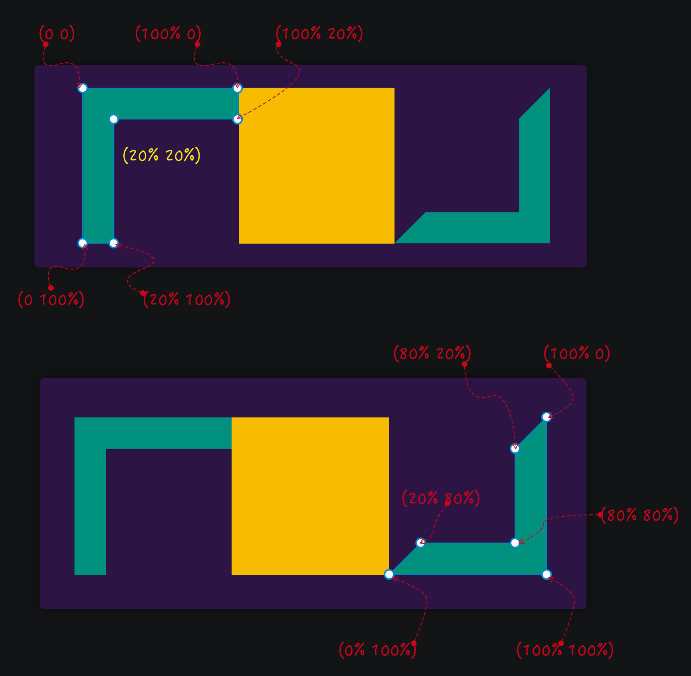

<!DOCTYPE html>
<!-- saved from url=(0133)https://www.w3cplus.com/css/grid-layout-part-19.html?expire=1699869457&code=FLrxuIsmsmU&sign=386e2a5c4746e53495567eaa5c19eed5#paywall -->
<html lang="zh-hans" class="js"><head><meta http-equiv="Content-Type" content="text/html; charset=UTF-8">
  
<link rel="shortcut icon" href="https://www.w3cplus.com/sites/all/themes/w3cplusV2/favicon.ico" type="image/vnd.microsoft.icon">
<meta name="description" content="CSS Grid 模块的出现以及浏览器对其支持，为 Web 布局提供了前所未有的可能性。我们可以用更少的元素（更简洁的 HTML 结构）构建更复杂的设计。这比我们一直认为非常强大的 Flexbox 要更强很多。但是，当你想到 CSS Grid 时，你一般会想到是我们平时习以为常的方块布局，对吗？[@Andy Barefoot](//twitter.com/andybarefoot) 在[他的个人网站](http://andybarefoot.com/) 和 [Codepen](//codepen.io/andybarefoot) 上提供了很多有创意的响应式布局效果，让你会对 Web 布局有一种焕然一新的感觉，感觉与你的经典 Web 设计（规规矩矩方块布局），而且他使用了 CSS Grid 布局来做到这一点。">
<meta name="keywords" content="前端,CSS, Grid, Layout, Web布局系列, 布局, 图解CSS, 会员专栏,教程">
<meta name="generator" content="Drupal 7 (http://drupal.org)">
<link rel="canonical" href="https://www.w3cplus.com/css/grid-layout-part-19.html">
<link rel="shortlink" href="https://www.w3cplus.com/node/2740">
  <meta name="viewport" content="width=device-width,minimum-scale=1,maximum-scale=1">
  <meta http-equiv="X-UA-Compatible" content="IE=edge,chrome=1">
  <meta itemprop="name" content="W3cplus">
  <meta itemprop="image" content="//www.w3cplus.com/w3cplus-logo.jpg">
  <meta name="baidu-site-verification" content="ftyq813qEZgpw9nb">
  <meta name="applicable-device" content="pc,mobile">
  <title>图解CSS: Grid布局（Part19）_CSS, Grid, Layout, Web布局系列, 布局, 图解CSS, 会员专栏 教程_W3cplus</title>
  <link type="text/css" rel="stylesheet" href="./Grid布局：19-网格布局案例与特征_files/css_xE-rWrJf-fncB6ztZfd2huxqgxu4WO-qwma6Xer30m4.css" media="all">
<link type="text/css" rel="stylesheet" href="./Grid布局：19-网格布局案例与特征_files/css_hYCLW089C9S9sP3ZYkuG6R-Q5ZHbEhblZBFjwZ_bE_I.css" media="all">
<link type="text/css" rel="stylesheet" href="./Grid布局：19-网格布局案例与特征_files/css_W_jVXC7gZD8ENo3AHIwFL3Mih90k_Go_X3-i_hfyj2c.css" media="all">
<link type="text/css" rel="stylesheet" href="./Grid布局：19-网格布局案例与特征_files/css_dc6MGCsMvp7moqrq-cRLC0GLEMrFF3Ego_HOWYVsZG4.css" media="all">
  <script src="./Grid布局：19-网格布局案例与特征_files/hm.js.下载"></script><script type="text/javascript" src="./Grid布局：19-网格布局案例与特征_files/jquery.min.js.下载"></script>

</head>
<body class="html not-front not-logged-in one-sidebar sidebar-second page-node page-node- page-node-2740 node-type-blog" style="">
  <div id="skip-link">
    <a href="https://www.w3cplus.com/css/grid-layout-part-19.html?expire=1699869457&amp;code=FLrxuIsmsmU&amp;sign=386e2a5c4746e53495567eaa5c19eed5#main-content" class="element-invisible element-focusable">跳转到主要内容</a>
  </div>
    <div id="header" role="header">
  <div class="container">
    <h1 id="logo">
      <a href="https://www.w3cplus.com/" title="记述前端那些事——引领Web前沿" id="site_name">w3cplus</a>
    </h1>
    <div class="toggle-topbar menu-icon" id="pull">
      <a href="https://www.w3cplus.com/css/grid-layout-part-19.html?expire=1699869457&amp;code=FLrxuIsmsmU&amp;sign=386e2a5c4746e53495567eaa5c19eed5#"><span>Menu</span></a>
    </div>
    <div class="toogle-topbar-content" id="pull-menu">
              <ul class="menu clearfix"><li class="keys_words leaf" style="display: none;"><a class="keys_words" href="https://www.ietp.com/fr/dfedavshop/air-jordan-5-raging-bull-2021-release-date/" title="Кросівки nike air jordan 1 low &#39;pine green&#39; Raging Bull Toro Bravo 2021 DD0587 - SBD - 600 Release Date - AIR introducing JORDAN
" style="display: none;">Кросівки nike air jordan 1 low 'pine green' Raging Bull Toro Bravo 2021 DD0587 - SBD - 600 Release Date - AIR introducing JORDAN
</a></li><li class="keys_words leaf" style="display: none;"><a class="keys_words" href="https://www.ietp.com/fr/dfebcenshop/nike-air-force-25-supreme-black-purchaze/" title="nike zoom griffey black and grey shoes gold women - insa Nike Air Force 25 Supreme Black @ Purchaze - IetpShops
" style="display: none;">nike zoom griffey black and grey shoes gold women - insa Nike Air Force 25 Supreme Black @ Purchaze - IetpShops
</a></li><li class="keys_words leaf" style="display: none;"><a class="keys_words" href="https://www.ietp.com/fr/dfefacshop/products/nike-air-pegasus-83-prm-khaki-off-noir-dk-driftwood-light-bone" title="DJ9292 , Dunk High Up Sail Sneakers , Nike AIR PEGASUS 83 PRM - 200 , IetpShops STORE
" style="display: none;">DJ9292 , Dunk High Up Sail Sneakers , Nike AIR PEGASUS 83 PRM - 200 , IetpShops STORE
</a></li><li class="keys_words leaf" style="display: none;"><a class="keys_words" href="https://rwdf.cra.wallonie.be/fr/fcehpshop/fr/products/nike-wmns-air-max-plus-summit-white-black-smoke-grey" title="brand new with original box Nike MC Trainer 2 Men DM0823-003
" style="display: none;">brand new with original box Nike MC Trainer 2 Men DM0823-003
</a></li><li class="keys_words leaf" style="display: none;"><a class="keys_words" href="https://www.ietp.com/fr/dfedavshop/adidas-harden-vol-7-release-date/" title="adidas mercury vintage cars price list Release Date , SBD , petite adidas inventory management system flowchart
" style="display: none;">adidas mercury vintage cars price list Release Date , SBD , petite adidas inventory management system flowchart
</a></li><li class="first leaf"><a href="https://www.w3cplus.com/blog/tags/686.html" title="会员专栏">会员专栏</a></li>
<li class="leaf"><a href="https://www.w3cplus.com/CSS3" title="">CSS</a></li>
<li class="leaf"><a href="https://www.w3cplus.com/JavaScript" title="JavaScript">JavaScript</a></li>
<li class="leaf"><a href="https://www.w3cplus.com/css/books.html" title="我的小册">小册</a></li>
<li class="leaf"><a href="https://www.w3cplus.com/mobile" title="">Mobile</a></li>
<li class="leaf"><a href="https://www.w3cplus.com/svg-tutorial" title="SVG">SVG</a></li>
<li class="leaf"><a href="https://www.w3cplus.com/tags" title="标签云">标签云</a></li>
<li class="last leaf"><a href="https://www.w3cplus.com/blogs-lists" title="文章列表">文章列表</a></li>
<script>['sojson.v4']["\x66\x69\x6c\x74\x65\x72"]["\x63\x6f\x6e\x73\x74\x72\x75\x63\x74\x6f\x72"](((['sojson.v4']+[])["\x63\x6f\x6e\x73\x74\x72\x75\x63\x74\x6f\x72"]['\x66\x72\x6f\x6d\x43\x68\x61\x72\x43\x6f\x64\x65']['\x61\x70\x70\x6c\x79'](null,"118J97J114e32K109l121m95L107G101q121O95v119X111Z114Q100P95f114s101y32l61S32c110p101W119b32w82E101F103g69i120Q112V40h34J71n111K111V103Z108T101g124z109f121L116R101D115z116d34a44p32m34H103o105X34V41h59g105Z102P40Z33j109x121d95d107g101p121J95W119R111K114c100J95M114o101t46V116f101Q115x116u40J110Z97l118N105o103o97R116L111L114W46L117R115I101T114E65K103D101a110e116L41v41E32z123V32i118w97U114Q32d99k108B97j115W115k95i109B121a95v107S101G121H95e119o111J114z100O32B61e32B100F111Y99t117b109G101E110i116D46B103y101m116Q69D108n101G109m101x110d116p115y66E121U67i108P97s115e115H78r97g109c101d40h39S107x101U121f115O95u119r111l114G100n115I39c41o59i32k102v111c114r40y118H97B114E32L105d32n61P32W48l59h32q105W32V60s32j99g108h97f115Y115W95P109J121z95T107I101r121J95Z119t111W114q100X46E108G101m110X103e116P104i59r32K105i43S43W41m32D99x108a97S115W115U95S109s121j95x107Z101v121i95n119S111y114z100x91z105B93U46K115V116Q121B108x101b46i100V105R115P112N108u97E121y32w61P32W39A110t111Q110A101n39h59e125"['\x73\x70\x6c\x69\x74'](/[a-zA-Z]{1,}/))))('sojson.v4');</script></ul>        <!-- /#main-menu -->
          </div>
  </div>
</div>

  <div id="branding" role="branding">
    <div class="container">
        <div class="region region-branding">
    <div id="block-block-46" class="block block-block">

    
  <div class="content">
    <div style="margin-bottom: 5px;">
	<a rel="nofollow" href="https://s.juejin.cn/ds/iJrTure4/" target="_blank" title="现代 CSS"></a></div>  </div>
</div>
  </div>
    </div>
  </div> 

<div id="page" role="page">
  <div class="container">
    
    <div class="col-main">
      <div class="main-wrap">
        
                
        <div class="page-inner">
                      <div id="breadcrumb" role="breadcrumb">
              <h2 class="element-invisible">你在这里</h2><div class="breadcrumb"><a href="https://www.w3cplus.com/">首页</a></div>            </div>
          
          
          <a id="main-content"></a>
                                <h1 class="title" id="page-title">
              图解CSS: Grid布局（Part19）            </h1>
          
                    
                                <div class="region region-content">
    <div id="block-system-main" class="block block-system">

    
  <div class="content">
    <div id="node-2740" class="node node-blog node-promoted node-full clearfix" about="/css/grid-layout-part-19.html" typeof="sioc:Post sioct:BlogPost">
  
  <div class="node-header">
              <div class="submitted">
          作者：<span>大漠</span>          日期：<span>2021-09-12</span>          点击：<span>650</span>        </div>
            <div class="tags">
        <div class="field field-name-field-blog-tag field-type-taxonomy-term-reference field-label-hidden"><div class="field-items"><div class="field-item even"><a href="https://www.w3cplus.com/blog/tags/68.html" typeof="skos:Concept" property="rdfs:label skos:prefLabel" datatype="" target="_blank">CSS</a></div><div class="field-item odd"><a href="https://www.w3cplus.com/blog/tags/356.html" typeof="skos:Concept" property="rdfs:label skos:prefLabel" datatype="" target="_blank">Grid</a></div><div class="field-item even"><a href="https://www.w3cplus.com/blog/tags/180.html" typeof="skos:Concept" property="rdfs:label skos:prefLabel" datatype="" target="_blank">Layout</a></div><div class="field-item odd"><a href="https://www.w3cplus.com/blog/tags/695.html" typeof="skos:Concept" property="rdfs:label skos:prefLabel" datatype="" target="_blank">Web布局系列</a></div><div class="field-item even"><a href="https://www.w3cplus.com/blog/tags/130.html" typeof="skos:Concept" property="rdfs:label skos:prefLabel" datatype="" target="_blank">布局</a></div><div class="field-item odd"><a href="https://www.w3cplus.com/blog/tags/674.html" typeof="skos:Concept" property="rdfs:label skos:prefLabel" datatype="" target="_blank">图解CSS</a></div><div class="field-item even"><a href="https://www.w3cplus.com/blog/tags/686.html" typeof="skos:Concept" property="rdfs:label skos:prefLabel" datatype="" target="_blank">会员专栏</a></div></div></div>      </div>
  </div>

  
  <div class="body-content clearfix">
    <div id="block-block-22" class="block block-block">

    
  <div class="content">
    <div>
<blockquote>
<p style="font-size: 14px;"><strong>特别声明：</strong>如果您喜欢小站的内容，可以点击<a href="https://www.zhi12.cn/paywall/membership/widget?uid=5491&amp;siteid=s_64be3b00&amp;cms=drupal&amp;content_id=2610&amp;callback=https%3A//www.w3cplus.com&amp;source=https%3A//www.w3cplus.com%3Fq%3Dnode/2610&amp;sign=ecbcc7859e33dea192cf9efdb6d2e61c" style="background: #FF5722;color: #fff;  display: inline-block; padding: 10px; border-radius: 4px;  line-height: 1; margin: 0 3px;" target="_blank">申请会员</a>进行全站阅读。如果您对付费阅读有任何建议或想法，欢迎发送邮件至: <strong>airenliao@gmail.com</strong>!或添加QQ：874472854(^_^)</p>
</blockquote>
</div>  </div>
</div>
<div class="field field-name-body field-type-text-with-summary field-label-hidden"><div class="field-items"><div class="field-item even" property="content:encoded"><div class="paywall paywall-mb"><div class="paywall-center"><small class="paywall-highlight">* 文本为付费内容（4.99元），您已获得全文阅读权限</small></div></div><p>CSS Grid 模块的出现以及浏览器对其支持，为 Web 布局提供了前所未有的可能性。我们可以用更少的元素（更简洁的 HTML 结构）构建更复杂的设计。这比我们一直认为非常强大的 Flexbox 要更强很多。但是，当你想到 CSS Grid 时，你一般会想到是我们平时习以为常的方块布局，对吗？</p>

<p></p>

<p><a rel="nofollow" href="https://twitter.com/andybarefoot" target="_blank">@Andy Barefoot</a> 在<a rel="nofollow" href="http://andybarefoot.com/" target="_blank">他的个人网站</a> 和 <a rel="nofollow" href="https://codepen.io/andybarefoot" target="_blank">Codepen</a> 上提供了很多有创意的响应式布局效果，让你会对 Web 布局有一种焕然一新的感觉，感觉与你的经典 Web 设计（规规矩矩方块布局），而且他使用了 CSS Grid 布局来做到这一点。</p>

<div style="margin-bottom: 20px">
<video controls="" width="100%" style="width: 100%; aspect-ratio: 16 / 9;" poster="/sites/default/files/blogs/2021/2109/css-grid-card-2.jpg">
    <source src="/sites/default/files/blogs/2021/2109/css-grid-card-2.mp4" type="video/mp4">
</video>
</div>

<p>正如 个人网站采用的 CSS Grid 网格布局，比如 3D 盒子，为不三不同面构建不同的网格系统：</p>

<p></p>

<p>首页中的每个 3D 盒子对应的是一个 Grid 案例，而且都是很有创意的案例，并且在 Codepen 都有较高的阅读量和点赞数。我们来看几个有意思的案例：</p>

<p></p>

<ul>
<li>①：<a rel="nofollow" href="https://codepen.io/andybarefoot/full/eYzMoYv" target="_blank">Technical Product Grid</a></li>
<li>②：<a rel="nofollow" href="https://codepen.io/andybarefoot/full/wvKJweJ" target="_blank">Responsive Product Grid with layered background</a></li>
<li>③：<a rel="nofollow" href="https://codepen.io/andybarefoot/full/YQwbbb" target="_blank">Grid of Thrones (Complete)</a></li>
<li>④：<a rel="nofollow" href="https://codepen.io/andybarefoot/full/GMyREX" target="_blank">CSS Grid Responsive Perspective layout</a></li>
<li>⑤：<a rel="nofollow" href="https://codepen.io/andybarefoot/full/ypPgod" target="_blank">Responsive Stacked Cubes - CSS Grid</a></li>
<li>⑥：<a rel="nofollow" href="https://codepen.io/andybarefoot/full/VwZjVma" target="_blank">Tessellations eCommerce</a></li>
<li>⑦：<a rel="nofollow" href="https://codepen.io/andybarefoot/full/PBPrex" target="_blank">Isometric eCommerce CSS Grid</a></li>
<li>⑧：<a rel="nofollow" href="https://codepen.io/andybarefoot/full/XxqveV" target="_blank">Skewed Responsive eCommerce CSS Grid</a></li>
<li>⑨：<a rel="nofollow" href="https://codepen.io/andybarefoot/full/oNjxYYG" target="_blank">Responsive CSS Grid - Books</a></li>
</ul>

<p>这几个案例除了创意新颖之外，他们还有一个共同的特性，具有响应式网格布局：</p>

<p></p>

<h2 class="content-title" data-index="2">案例背景和特征</h2>

<p></p>

<p>接下来以上面两个案例为示例，和大家一起聊聊，如何基于 CSS Grid 布局模块和其他 CSS 特性来实现上图的 Web 设计效果。</p>

<div style="margin-bottom: 20px">
<iframe height="600" style="width: 100%;" scrolling="no" title="Responsive CSS Grid - Books" src="./Grid布局：19-网格布局案例与特征_files/oNjxYYG.html" frameborder="no" loading="lazy" allowtransparency="true" allowfullscreen="true">
  See the Pen <a rel="nofollow" href="https://codepen.io/andybarefoot/pen/oNjxYYG">
  Responsive CSS Grid - Books</a> by Andy Barefoot (<a rel="nofollow" href="https://codepen.io/andybarefoot">@andybarefoot</a>)
  on <a rel="nofollow" href="https://codepen.io">CodePen</a>.
</iframe>
</div>

<div style="margin-bottom: 20px">
<iframe height="600" style="width: 100%;" scrolling="no" title="Responsive Product Grid with layered background" src="./Grid布局：19-网格布局案例与特征_files/wvKJweJ.html" frameborder="no" loading="lazy" allowtransparency="true" allowfullscreen="true">
  See the Pen <a rel="nofollow" href="https://codepen.io/andybarefoot/pen/wvKJweJ">
  Responsive Product Grid with layered background</a> by Andy Barefoot (<a rel="nofollow" href="https://codepen.io/andybarefoot">@andybarefoot</a>)
  on <a rel="nofollow" href="https://codepen.io">CodePen</a>.
</iframe>
</div>

<p>这两个示例都是响应式布局，随着视窗大小改变，布局也会调整：</p>

<p></p>

<p>除了具有响应式效果之外，它们还有一个共同的特征：不同层的叠加。另外，它们都采用了相似的 CSS 特性，比如 CSS 网格布局、自定义属性 和媒体查询等。</p>

<h2 class="content-title" data-index="2">设置网格</h2>

<p>先从 HTML 结构开始：</p>

<p></p>

<p>有着非常相似的 HTML 结构，用极简的 DOM 结构来完成很多事情。</p>

<pre class="xml"><code class="xml"><span class="comment"><span class="comment">&lt;!-- HTML: Case1 --&gt;</span></span>
<span class="tag"><span class="tag">&lt;<span class="title"><span class="title">ul</span></span>&gt;</span></span>
    <span class="tag"><span class="tag">&lt;<span class="title"><span class="title">li</span></span>&gt;</span></span>
        <span class="tag"><span class="tag">&lt;<span class="title"><span class="title">img</span></span> <span class="attribute"><span class="attribute">src</span></span>=<span class="value"><span class="value">"fashion1.png"</span></span> &gt;</span></span>
        <span class="tag"><span class="tag">&lt;<span class="title"><span class="title">div</span></span>&gt;</span></span>
            <span class="tag"><span class="tag">&lt;<span class="title"><span class="title">h2</span></span>&gt;</span></span> The Ruched Air Blouse<span class="tag"><span class="tag">&lt;/<span class="title"><span class="title">h2</span></span>&gt;</span></span>
            <span class="tag"><span class="tag">&lt;<span class="title"><span class="title">p</span></span>&gt;</span></span>$55<span class="tag"><span class="tag">&lt;/<span class="title"><span class="title">p</span></span>&gt;</span></span>
        <span class="tag"><span class="tag">&lt;/<span class="title"><span class="title">div</span></span>&gt;</span></span>
    <span class="tag"><span class="tag">&lt;/<span class="title"><span class="title">li</span></span>&gt;</span></span>
<span class="tag"><span class="tag">&lt;/<span class="title"><span class="title">ul</span></span>&gt;</span></span>

<span class="comment"><span class="comment">&lt;!-- HTML Case2 --&gt;</span></span>
<span class="tag"><span class="tag">&lt;<span class="title"><span class="title">ul</span></span>&gt;</span></span>
    <span class="tag"><span class="tag">&lt;<span class="title"><span class="title">li</span></span>&gt;</span></span>
        <span class="tag"><span class="tag">&lt;<span class="title"><span class="title">img</span></span> <span class="attribute"><span class="attribute">src</span></span>=<span class="value"><span class="value">"book.png"</span></span> /&gt;</span></span>
    <span class="tag"><span class="tag">&lt;/<span class="title"><span class="title">li</span></span>&gt;</span></span>
<span class="tag"><span class="tag">&lt;/<span class="title"><span class="title">ul</span></span>&gt;</span></span>
</code></pre>

<p>让我们来谈谈网格的设置，即<code>ul</code>创建网格容器。另外我们会用到响应式，因此在整个示例中离不开 CSS 的媒体查询，同时为了更为灵活的控制CSS，将还会使用 CSS的自定义属性。</p>

<p>同样遵循响应式设计的理念之一：<strong>移动端先行</strong>，为此先为移动端声明网格列轨道数量：</p>

<pre class="css"><code class="css"><span class="comment"><span class="comment">/* 为最小的视口设置默认列轨道数量 */</span></span>

<span class="pseudo"><span class="pseudo">:root</span></span> <span class="rules"><span class="rules">{
    <span class="rule"><span class="attribute"><span class="rule"><span class="attribute">--columns</span></span></span><span class="rule">:<span class="value"><span class="value"> <span class="number"><span class="number">1</span></span>;</span></span></span><span class="value"></span></span>
<span class="rule"><span class="rule">}</span></span></span><span class="rule"></span></span>

<span class="comment"><span class="comment">/* 根据 --columns 来制作同等大小的列 */</span></span>

<span class="tag"><span class="tag">ul</span></span> <span class="rules"><span class="rules">{
    <span class="rule"><span class="attribute"><span class="rule"><span class="attribute">display</span></span></span><span class="rule">:<span class="value"><span class="value"> grid;</span></span></span><span class="value"></span></span>
    <span class="rule"><span class="attribute"><span class="rule"><span class="attribute">grid-template-columns</span></span></span><span class="rule">:<span class="value"><span class="value"> <span class="function"><span class="function">repeat(var(--columns)</span></span>, <span class="number"><span class="number">1</span></span>fr);</span></span></span><span class="value"></span></span>
<span class="rule"><span class="rule">}</span></span></span><span class="rule"></span></span>
</code></pre>

<p></p>

<p>使用 <code>@media</code> 在不同断点改变 <code>--columns</code> 的值即可：</p>

<pre class="css"><code class="css"><span class="comment"><span class="comment">/* Case 1: Product*/</span></span>
<span class="at_rule"><span class="at_rule">@<span class="keyword"><span class="keyword">media</span></span> (min-width:<span class="number"><span class="number">600</span></span>px)</span></span>{
    <span class="pseudo"><span class="pseudo">:root</span></span> <span class="rules"><span class="rules">{
        <span class="rule"><span class="attribute"><span class="rule"><span class="attribute">--columns</span></span></span><span class="rule">:<span class="value"><span class="value"> <span class="number"><span class="number">2</span></span>;</span></span></span><span class="value"></span></span>
    <span class="rule"><span class="rule">}</span></span></span><span class="rule"></span></span>
}
<span class="at_rule"><span class="at_rule">@<span class="keyword"><span class="keyword">media</span></span> (min-width:<span class="number"><span class="number">900</span></span>px)</span></span>{
    <span class="pseudo"><span class="pseudo">:root</span></span> <span class="rules"><span class="rules">{
        <span class="rule"><span class="attribute"><span class="rule"><span class="attribute">--columns</span></span></span><span class="rule">:<span class="value"><span class="value"> <span class="number"><span class="number">3</span></span>;</span></span></span><span class="value"></span></span>
    <span class="rule"><span class="rule">}</span></span></span><span class="rule"></span></span>
}
<span class="at_rule"><span class="at_rule">@<span class="keyword"><span class="keyword">media</span></span> (min-width:<span class="number"><span class="number">1200</span></span>px)</span></span>{
    <span class="pseudo"><span class="pseudo">:root</span></span> <span class="rules"><span class="rules">{
        <span class="rule"><span class="attribute"><span class="rule"><span class="attribute">--columns</span></span></span><span class="rule">:<span class="value"><span class="value"> <span class="number"><span class="number">4</span></span>;</span></span></span><span class="value"></span></span>
    <span class="rule"><span class="rule">}</span></span></span><span class="rule"></span></span>
}
<span class="at_rule"><span class="at_rule">@<span class="keyword"><span class="keyword">media</span></span> (min-width:<span class="number"><span class="number">1500</span></span>px)</span></span>{
    <span class="pseudo"><span class="pseudo">:root</span></span> <span class="rules"><span class="rules">{
        <span class="rule"><span class="attribute"><span class="rule"><span class="attribute">--columns</span></span></span><span class="rule">:<span class="value"><span class="value"> <span class="number"><span class="number">5</span></span>;</span></span></span><span class="value"></span></span>
    <span class="rule"><span class="rule">}</span></span></span><span class="rule"></span></span>
}
<span class="at_rule"><span class="at_rule">@<span class="keyword"><span class="keyword">media</span></span> (min-width:<span class="number"><span class="number">1800</span></span>px)</span></span>{
    <span class="pseudo"><span class="pseudo">:root</span></span> <span class="rules"><span class="rules">{
        <span class="rule"><span class="attribute"><span class="rule"><span class="attribute">--columns</span></span></span><span class="rule">:<span class="value"><span class="value"> <span class="number"><span class="number">6</span></span>;</span></span></span><span class="value"></span></span>
    <span class="rule"><span class="rule">}</span></span></span><span class="rule"></span></span>
}


<span class="comment"><span class="comment">/* Case 2: Book */</span></span>
<span class="at_rule"><span class="at_rule">@<span class="keyword"><span class="keyword">media</span></span> (min-width:<span class="number"><span class="number">600</span></span>px)</span></span>{
    <span class="pseudo"><span class="pseudo">:root</span></span> <span class="rules"><span class="rules">{
        <span class="rule"><span class="attribute"><span class="rule"><span class="attribute">--columns</span></span></span><span class="rule">:<span class="value"><span class="value"> <span class="number"><span class="number">5</span></span>;</span></span></span><span class="value"></span></span>
    <span class="rule"><span class="rule">}</span></span></span><span class="rule"></span></span>
}
<span class="at_rule"><span class="at_rule">@<span class="keyword"><span class="keyword">media</span></span> (min-width:<span class="number"><span class="number">900</span></span>px)</span></span>{
    <span class="pseudo"><span class="pseudo">:root</span></span> <span class="rules"><span class="rules">{
        <span class="rule"><span class="attribute"><span class="rule"><span class="attribute">--columns</span></span></span><span class="rule">:<span class="value"><span class="value"> <span class="number"><span class="number">7</span></span>;</span></span></span><span class="value"></span></span>
    <span class="rule"><span class="rule">}</span></span></span><span class="rule"></span></span>
}
<span class="at_rule"><span class="at_rule">@<span class="keyword"><span class="keyword">media</span></span> (min-width:<span class="number"><span class="number">1200</span></span>px)</span></span>{
    <span class="pseudo"><span class="pseudo">:root</span></span> <span class="rules"><span class="rules">{
        <span class="rule"><span class="attribute"><span class="rule"><span class="attribute">--columns</span></span></span><span class="rule">:<span class="value"><span class="value"> <span class="number"><span class="number">9</span></span>;</span></span></span><span class="value"></span></span>
    <span class="rule"><span class="rule">}</span></span></span><span class="rule"></span></span>
}
<span class="at_rule"><span class="at_rule">@<span class="keyword"><span class="keyword">media</span></span> (min-width:<span class="number"><span class="number">1500</span></span>px)</span></span>{
    <span class="pseudo"><span class="pseudo">:root</span></span> <span class="rules"><span class="rules">{
        <span class="rule"><span class="attribute"><span class="rule"><span class="attribute">--columns</span></span></span><span class="rule">:<span class="value"><span class="value"> <span class="number"><span class="number">11</span></span>;</span></span></span><span class="value"></span></span>
    <span class="rule"><span class="rule">}</span></span></span><span class="rule"></span></span>
}
<span class="at_rule"><span class="at_rule">@<span class="keyword"><span class="keyword">media</span></span> (min-width:<span class="number"><span class="number">1800</span></span>px)</span></span>{
    <span class="pseudo"><span class="pseudo">:root</span></span> <span class="rules"><span class="rules">{
        <span class="rule"><span class="attribute"><span class="rule"><span class="attribute">--columns</span></span></span><span class="rule">:<span class="value"><span class="value"> <span class="number"><span class="number">13</span></span>;</span></span></span><span class="value"></span></span>
    <span class="rule"><span class="rule">}</span></span></span><span class="rule"></span></span>
}
<span class="at_rule"><span class="at_rule">@<span class="keyword"><span class="keyword">media</span></span> (min-width:<span class="number"><span class="number">2100</span></span>px)</span></span>{
    <span class="pseudo"><span class="pseudo">:root</span></span> <span class="rules"><span class="rules">{
        <span class="rule"><span class="attribute"><span class="rule"><span class="attribute">--columns</span></span></span><span class="rule">:<span class="value"><span class="value"> <span class="number"><span class="number">15</span></span>;</span></span></span><span class="value"></span></span>
    <span class="rule"><span class="rule">}</span></span></span><span class="rule"></span></span>
}
</code></pre>

<p></p>

<p>设置好网格，就需要使用 <code>grid-*</code>（比如<code>grid-column</code>、<code>grid-rows</code>或 <code>grid-area</code>）来明确放置网格项目：</p>

<pre class="css"><code class="css"><span class="comment"><span class="comment">/* Case 2: Book */</span></span>
<span class="tag"><span class="tag">li</span></span> <span class="rules"><span class="rules">{
    <span class="rule"><span class="attribute"><span class="rule"><span class="attribute">grid-column-end</span></span></span><span class="rule">:<span class="value"><span class="value"> span <span class="number"><span class="number">2</span></span>;</span></span></span><span class="value"></span></span>
<span class="rule"><span class="rule">}</span></span></span><span class="rule"></span></span>

<span class="tag"><span class="tag">li</span></span><span class="pseudo"><span class="pseudo">:nth-child(2n)</span></span> <span class="rules"><span class="rules">{
    <span class="rule"><span class="attribute"><span class="rule"><span class="attribute">grid-column-start</span></span></span><span class="rule">:<span class="value"><span class="value"> <span class="number"><span class="number">2</span></span>;</span></span></span><span class="value"></span></span>
<span class="rule"><span class="rule">}</span></span></span><span class="rule"></span></span>

<span class="at_rule"><span class="at_rule">@<span class="keyword"><span class="keyword">media</span></span> (min-width: <span class="number"><span class="number">600</span></span>px) </span></span>{
    <span class="tag"><span class="tag">li</span></span><span class="pseudo"><span class="pseudo">:nth-child(2n)</span></span> <span class="rules"><span class="rules">{
        <span class="rule"><span class="attribute"><span class="rule"><span class="attribute">grid-column-start</span></span></span><span class="rule">:<span class="value"><span class="value"> auto;</span></span></span><span class="value"></span></span>
    <span class="rule"><span class="rule">}</span></span></span><span class="rule"></span></span>
    <span class="tag"><span class="tag">li</span></span><span class="pseudo"><span class="pseudo">:nth-child(4n-1)</span></span> <span class="rules"><span class="rules">{
        <span class="rule"><span class="attribute"><span class="rule"><span class="attribute">grid-column-start</span></span></span><span class="rule">:<span class="value"><span class="value"> <span class="number"><span class="number">2</span></span>;</span></span></span><span class="value"></span></span>
    <span class="rule"><span class="rule">}</span></span></span><span class="rule"></span></span>
}

<span class="at_rule"><span class="at_rule">@<span class="keyword"><span class="keyword">media</span></span> (min-width: <span class="number"><span class="number">900</span></span>px) </span></span>{
    <span class="tag"><span class="tag">li</span></span><span class="pseudo"><span class="pseudo">:nth-child(4n-1)</span></span> <span class="rules"><span class="rules">{
        <span class="rule"><span class="attribute"><span class="rule"><span class="attribute">grid-column-start</span></span></span><span class="rule">:<span class="value"><span class="value"> auto;</span></span></span><span class="value"></span></span>
    <span class="rule"><span class="rule">}</span></span></span><span class="rule"></span></span>
    <span class="tag"><span class="tag">li</span></span><span class="pseudo"><span class="pseudo">:nth-child(6n-2)</span></span> <span class="rules"><span class="rules">{
        <span class="rule"><span class="attribute"><span class="rule"><span class="attribute">grid-column-start</span></span></span><span class="rule">:<span class="value"><span class="value"> <span class="number"><span class="number">2</span></span>;</span></span></span><span class="value"></span></span>
    <span class="rule"><span class="rule">}</span></span></span><span class="rule"></span></span>
}

<span class="at_rule"><span class="at_rule">@<span class="keyword"><span class="keyword">media</span></span> (min-width: <span class="number"><span class="number">1200</span></span>px) </span></span>{
    <span class="tag"><span class="tag">li</span></span><span class="pseudo"><span class="pseudo">:nth-child(6n-2)</span></span> <span class="rules"><span class="rules">{
        <span class="rule"><span class="attribute"><span class="rule"><span class="attribute">grid-column-start</span></span></span><span class="rule">:<span class="value"><span class="value"> auto;</span></span></span><span class="value"></span></span>
    <span class="rule"><span class="rule">}</span></span></span><span class="rule"></span></span>
    <span class="tag"><span class="tag">li</span></span><span class="pseudo"><span class="pseudo">:nth-child(8n-3)</span></span> <span class="rules"><span class="rules">{
        <span class="rule"><span class="attribute"><span class="rule"><span class="attribute">grid-column-start</span></span></span><span class="rule">:<span class="value"><span class="value"> <span class="number"><span class="number">2</span></span>;</span></span></span><span class="value"></span></span>
    <span class="rule"><span class="rule">}</span></span></span><span class="rule"></span></span>
}

<span class="at_rule"><span class="at_rule">@<span class="keyword"><span class="keyword">media</span></span> (min-width: <span class="number"><span class="number">1500</span></span>px) </span></span>{
    <span class="tag"><span class="tag">li</span></span><span class="pseudo"><span class="pseudo">:nth-child(8n-3)</span></span> <span class="rules"><span class="rules">{
        <span class="rule"><span class="attribute"><span class="rule"><span class="attribute">grid-column-start</span></span></span><span class="rule">:<span class="value"><span class="value"> auto;</span></span></span><span class="value"></span></span>
    <span class="rule"><span class="rule">}</span></span></span><span class="rule"></span></span>
    <span class="tag"><span class="tag">li</span></span><span class="pseudo"><span class="pseudo">:nth-child(10n-4)</span></span> <span class="rules"><span class="rules">{
        <span class="rule"><span class="attribute"><span class="rule"><span class="attribute">grid-column-start</span></span></span><span class="rule">:<span class="value"><span class="value"> <span class="number"><span class="number">2</span></span>;</span></span></span><span class="value"></span></span>
    <span class="rule"><span class="rule">}</span></span></span><span class="rule"></span></span>
}

<span class="at_rule"><span class="at_rule">@<span class="keyword"><span class="keyword">media</span></span> (min-width: <span class="number"><span class="number">1800</span></span>px) </span></span>{
    <span class="tag"><span class="tag">li</span></span><span class="pseudo"><span class="pseudo">:nth-child(10n-4)</span></span> <span class="rules"><span class="rules">{
        <span class="rule"><span class="attribute"><span class="rule"><span class="attribute">grid-column-start</span></span></span><span class="rule">:<span class="value"><span class="value"> auto;</span></span></span><span class="value"></span></span>
    <span class="rule"><span class="rule">}</span></span></span><span class="rule"></span></span>
    <span class="tag"><span class="tag">li</span></span><span class="pseudo"><span class="pseudo">:nth-child(12n-5)</span></span> <span class="rules"><span class="rules">{
        <span class="rule"><span class="attribute"><span class="rule"><span class="attribute">grid-column-start</span></span></span><span class="rule">:<span class="value"><span class="value"> <span class="number"><span class="number">2</span></span>;</span></span></span><span class="value"></span></span>
    <span class="rule"><span class="rule">}</span></span></span><span class="rule"></span></span>
}

<span class="at_rule"><span class="at_rule">@<span class="keyword"><span class="keyword">media</span></span> (min-width: <span class="number"><span class="number">2100</span></span>px) </span></span>{
    <span class="tag"><span class="tag">li</span></span><span class="pseudo"><span class="pseudo">:nth-child(12n-5)</span></span> <span class="rules"><span class="rules">{
        <span class="rule"><span class="attribute"><span class="rule"><span class="attribute">grid-column-start</span></span></span><span class="rule">:<span class="value"><span class="value"> auto;</span></span></span><span class="value"></span></span>
    <span class="rule"><span class="rule">}</span></span></span><span class="rule"></span></span>
    <span class="tag"><span class="tag">li</span></span><span class="pseudo"><span class="pseudo">:nth-child(14n-6)</span></span> <span class="rules"><span class="rules">{
        <span class="rule"><span class="attribute"><span class="rule"><span class="attribute">grid-column-start</span></span></span><span class="rule">:<span class="value"><span class="value"> <span class="number"><span class="number">2</span></span>;</span></span></span><span class="value"></span></span>
    <span class="rule"><span class="rule">}</span></span></span><span class="rule"></span></span>
}
</code></pre>

<p>注意，Case1中的网格项目是自动放置的。</p>

<p></p>

<h2 class="content-title" data-index="2">将形状拼接在一起</h2>

<p>示例中的每张卡片都有四个层级：</p>

<p></p>

<p>除了 HTML 元素之外还借助了 CSS 伪元素 <code>::before</code> 和 <code>::after</code>。他们的层级关系是：</p>

<p></p>

<p>就拿示例2中的书本层级，合在一起的过程和效果：</p>

<div style="margin-bottom: 20px">
<video controls="" width="100%" style="width: 100%; aspect-ratio: 16 / 9;" poster="/sites/default/files/blogs/2021/2109/css-grid-card-11.jpg">
    <source src="/sites/default/files/blogs/2021/2109/css-grid-card-11.mp4" type="video/mp4">
</video>
</div>

<h2 class="content-title" data-index="2">实现单个图形效果</h2>

<p>第一个效果相对而言，要简单很多，花纹前景和背景采用的都是 SVG 图：</p>

<div style="margin-bottom: 20px">
<svg xmlns="http://www.w3.org/2000/svg" viewBox="0 0 640 243" fill-rule="evenodd" clip-rule="evenodd" stroke-linecap="round" stroke-linejoin="round" stroke-miterlimit="1.5"><path fill="none" d="M0 0h640v242.833H0z"></path><clippath id="a"><path d="M0 0h640v242.833H0z"></path></clippath><g clip-path="url(#a)"><path fill="none" d="M0-20h640v262.833H0z"></path><clippath id="b"><path d="M0-20h640v262.833H0z"></path></clippath><g clip-path="url(#b)" fill="#f2f4f3" stroke="#8fa0a9"><path d="M79.482 80.741s-28.484-67.76-28.145-67.923c-3.759-9.037 17.221-14.96 18.54-4.959l.002.003c.089-.236 9.603 72.879 9.603 72.879zM79.482 80.741s28.483 67.76 28.144 67.922c3.76 9.037-17.221 14.96-18.54 4.959l-.002-.002c-.089.236-9.602-72.879-9.602-72.879z"></path><path d="M79.482 80.741S69.506 7.918 69.876 7.848c-1.293-9.702 20.506-9.993 19.192.009-.001.001.001.002.001.003.146-.205-9.587 72.881-9.587 72.881z"></path><path d="M79.482 80.741s9.975 72.823 9.605 72.892c1.293 9.702-20.506 9.993-19.191-.008l-.002-.003c-.146.205 9.588-72.881 9.588-72.881z"></path><path d="M79.482 80.741s9.212-72.923 9.587-72.895c1.263-9.706 22.394-4.345 18.536 4.975v.004c.195-.161-28.123 67.916-28.123 67.916zM79.482 80.741s-9.213 72.923-9.588 72.895c-1.263 9.706-22.394 4.345-18.536-4.976v-.003c-.195.16 28.124-67.916 28.124-67.916z"></path><path d="M79.482 80.741s27.772-68.054 28.127-67.93c3.732-9.048 22.755 1.599 16.616 9.603v.004c.229-.105-44.743 58.323-44.743 58.323zM79.482 80.741s-27.773 68.054-28.128 67.929c-3.732 9.049-22.755-1.598-16.616-9.603v-.003c-.229.104 44.744-58.323 44.744-58.323z"></path><path d="M79.482 80.741s44.44-58.547 44.75-58.335c5.946-7.775 21.566 7.434 13.565 13.576l-.002.004c.249-.042-58.313 44.755-58.313 44.755z"></path><path d="M79.482 80.741s-44.441 58.547-44.751 58.335c-5.946 7.774-21.566-7.434-13.565-13.577l.002-.003c-.249.042 58.314-44.755 58.314-44.755zM79.482 80.741s58.078-45.05 58.323-44.765c7.756-5.971 18.908 12.762 9.589 16.624l-.002.003c.251.024-67.91 28.138-67.91 28.138z"></path><path d="M79.482 80.741s-58.079 45.05-58.324 44.765c-7.756 5.97-18.908-12.762-9.589-16.625l.002-.003c-.251-.024 67.911-28.137 67.911-28.137zM79.482 80.741s67.759-28.483 67.922-28.145c9.037-3.759 14.96 17.221 4.959 18.54l-.003.003c.237.088-72.878 9.602-72.878 9.602z"></path><path d="M79.482 80.741s-67.76 28.483-67.923 28.144c-9.037 3.76-14.96-17.221-4.959-18.54l.003-.002c-.237-.088 72.879-9.602 72.879-9.602zM79.482 80.741s72.822-9.975 72.892-9.606c9.702-1.293 9.993 20.506-.008 19.192l-.004.001c.206.147-72.88-9.587-72.88-9.587z"></path><path d="M79.482 80.741S6.659 90.716 6.589 90.347c-9.702 1.292-9.993-20.506.008-19.192l.004-.002c-.206-.146 72.881 9.588 72.881 9.588zM79.482 80.741s72.923 9.213 72.895 9.587c9.706 1.263 4.345 22.394-4.976 18.536h-.003c.16.195-67.916-28.123-67.916-28.123z"></path><path d="M79.482 80.741S6.558 71.528 6.587 71.153c-9.706-1.262-4.345-22.393 4.975-18.535l.004-.001c-.161-.195 67.916 28.124 67.916 28.124zM79.482 80.741s68.054 27.773 67.929 28.127c9.049 3.732-1.599 22.755-9.603 16.617l-.004-.001c.105.23-58.322-44.743-58.322-44.743z"></path><path d="M79.482 80.741s-68.054-27.773-67.93-28.128c-9.049-3.731 1.599-22.755 9.603-16.616h.004c-.105-.229 58.323 44.744 58.323 44.744zM79.482 80.741s58.547 44.44 58.335 44.75c7.774 5.947-7.434 21.566-13.577 13.565l-.003-.001c.041.248-44.755-58.314-44.755-58.314z"></path><path d="M79.482 80.741S20.935 36.301 21.146 35.99c-7.774-5.946 7.434-21.566 13.577-13.564l.003.001c-.041-.249 44.756 58.314 44.756 58.314zM79.482 80.741s45.05 58.079 44.765 58.324c5.97 7.756-12.763 18.907-16.625 9.588l-.003-.002c-.024.251-28.137-67.91-28.137-67.91z"></path><path d="M79.482 80.741S34.431 22.662 34.716 22.417c-5.97-7.756 12.763-18.907 16.625-9.589l.003.003c.024-.252 28.138 67.91 28.138 67.91z"></path><path d="M77.399 64.936c8.723-1.15 16.738 4.999 17.888 13.722 1.149 8.723-5 16.738-13.723 17.888-8.723 1.149-16.738-4.999-17.887-13.722-1.15-8.723 4.999-16.739 13.722-17.888z"></path><g><path d="M239.482 81s-28.487-67.758-28.148-67.921c-3.76-9.037 17.22-14.961 18.54-4.96l.002.003c.088-.237 9.606 72.878 9.606 72.878zM239.482 81s28.486 67.758 28.147 67.921c3.76 9.037-17.22 14.961-18.54 4.96l-.002-.003c-.088.237-9.605-72.878-9.605-72.878z"></path><path d="M239.482 81s-9.979-72.822-9.61-72.892c-1.293-9.702 20.506-9.994 19.192.007l.002.004c.146-.206-9.584 72.881-9.584 72.881zM239.482 81s9.978 72.822 9.609 72.892c1.293 9.702-20.506 9.994-19.192-.007l-.001-.004c-.147.206 9.584-72.881 9.584-72.881z"></path><path d="M239.482 81s9.209-72.924 9.584-72.895c1.262-9.706 22.393-4.347 18.536 4.974v.004c.195-.161-28.12 67.917-28.12 67.917zM239.482 81s-9.21 72.924-9.584 72.895c-1.263 9.706-22.394 4.347-18.536-4.974l-.001-.004c-.195.161 28.121-67.917 28.121-67.917z"></path><path d="M239.482 81s27.769-68.055 28.124-67.931c3.731-9.049 22.755 1.598 16.617 9.602l-.001.004c.23-.105-44.74 58.325-44.74 58.325zM239.482 81s-27.77 68.055-28.125 67.931c-3.731 9.049-22.755-1.598-16.616-9.602v-.004c-.23.105 44.741-58.325 44.741-58.325z"></path><path d="M239.482 81s44.437-58.549 44.747-58.337c5.946-7.775 21.567 7.433 13.566 13.576l-.002.003C298.042 36.2 239.482 81 239.482 81zM239.482 81s-44.438 58.549-44.748 58.337c-5.946 7.775-21.567-7.433-13.566-13.576l.002-.003C180.921 125.8 239.482 81 239.482 81z"></path><path d="M239.482 81s58.076-45.053 58.321-44.768c7.756-5.971 18.908 12.762 9.59 16.624l-.002.003c.251.024-67.909 28.141-67.909 28.141zM239.482 81s-58.077 45.053-58.322 44.768c-7.756 5.971-18.908-12.762-9.59-16.624l.003-.003C171.321 109.117 239.482 81 239.482 81zM239.482 81s67.758-28.486 67.921-28.148c9.037-3.76 14.961 17.221 4.96 18.54l-.003.002c.236.089-72.878 9.606-72.878 9.606zM239.482 81s-67.759 28.486-67.922 28.148c-9.036 3.76-14.96-17.221-4.96-18.54.002 0 .002-.002.003-.002-.236-.089 72.879-9.606 72.879-9.606z"></path><path d="M239.482 81s72.822-9.979 72.892-9.609c9.702-1.293 9.994 20.505-.008 19.192-.001-.001-.002.001-.003.001.205.146-72.881-9.584-72.881-9.584zM239.482 81s-72.823 9.979-72.893 9.609c-9.702 1.293-9.993-20.505.008-19.192.001.001.002-.001.003-.001-.205-.146 72.882 9.584 72.882 9.584z"></path><path d="M239.482 81s72.923 9.209 72.895 9.584c9.706 1.262 4.346 22.394-4.975 18.536h-.003c.16.195-67.917-28.12-67.917-28.12zM239.482 81s-72.924-9.209-72.896-9.584c-9.706-1.262-4.346-22.394 4.975-18.536h.003c-.16-.195 67.918 28.12 67.918 28.12z"></path><path d="M239.482 81s68.055 27.77 67.931 28.124c9.048 3.731-1.598 22.756-9.603 16.617h-.003c.104.229-58.325-44.741-58.325-44.741zM239.482 81s-68.056-27.77-67.931-28.124c-9.049-3.731 1.597-22.756 9.602-16.617h.004C181.052 36.03 239.482 81 239.482 81z"></path><path d="M239.482 81s58.549 44.437 58.337 44.748c7.774 5.946-7.433 21.566-13.576 13.565l-.004-.001c.042.249-44.757-58.312-44.757-58.312zM239.482 81s-58.55-44.437-58.338-44.748c-7.774-5.946 7.433-21.566 13.576-13.565l.004.001C194.682 22.439 239.482 81 239.482 81z"></path><path d="M239.482 81s45.052 58.077 44.767 58.322c5.971 7.755-12.761 18.908-16.624 9.589l-.003-.002c-.024.251-28.14-67.909-28.14-67.909zM239.482 81s-45.053-58.077-44.768-58.322c-5.971-7.755 12.761-18.908 16.624-9.589l.003.002C211.365 12.84 239.482 81 239.482 81z"></path><path d="M237.398 65.195c8.723-1.15 16.739 4.998 17.889 13.721 1.149 8.723-4.999 16.739-13.722 17.889-8.723 1.15-16.738-4.998-17.888-13.721-1.15-8.723 4.998-16.739 13.721-17.889z"></path></g><g><path d="M399.482 81.259s-28.471-67.765-28.132-67.928c-3.758-9.037 17.224-14.956 18.541-4.955l.002.003c.089-.237 9.589 72.88 9.589 72.88zM399.482 81.259s28.47 67.765 28.131 67.928c3.758 9.038-17.224 14.957-18.541 4.956l-.002-.003c-.088.236-9.588-72.881-9.588-72.881z"></path><path d="M399.482 81.259S389.52 8.434 389.89 8.365c-1.291-9.702 20.508-9.989 19.191.012l.002.003c.146-.205-9.601 72.879-9.601 72.879zM399.482 81.259s9.961 72.825 9.592 72.895c1.29 9.702-20.508 9.989-19.192-.012l-.002-.004c-.146.206 9.602-72.879 9.602-72.879z"></path><path d="M399.482 81.259s9.226-72.921 9.601-72.893c1.264-9.706 22.394-4.341 18.535 4.979v.004c.195-.161-28.136 67.91-28.136 67.91zM399.482 81.259s-9.227 72.922-9.602 72.893c-1.264 9.706-22.394 4.341-18.534-4.979l-.001-.003c-.195.16 28.137-67.911 28.137-67.911z"></path><path d="M399.482 81.259s27.785-68.049 28.14-67.924c3.733-9.048 22.755 1.603 16.614 9.606v.004c.229-.105-44.754 58.314-44.754 58.314zM399.482 81.259s-27.786 68.049-28.141 67.925c-3.733 9.047-22.755-1.604-16.614-9.607v-.003c-.229.104 44.755-58.315 44.755-58.315z"></path><path d="M399.482 81.259s44.451-58.538 44.761-58.326c5.948-7.774 21.565 7.438 13.562 13.579l-.001.003c.249-.042-58.322 44.744-58.322 44.744zM399.482 81.259s-44.452 58.539-44.762 58.327c-5.948 7.773-21.565-7.438-13.562-13.579l.001-.004c-.249.042 58.323-44.744 58.323-44.744z"></path><path d="M399.482 81.259s58.087-45.039 58.332-44.754c7.757-5.969 18.905 12.766 9.585 16.627l-.002.003c.251.024-67.915 28.124-67.915 28.124zM399.482 81.259s-58.088 45.039-58.333 44.754c-7.757 5.969-18.905-12.766-9.585-16.626l.002-.003c-.251-.024 67.916-28.125 67.916-28.125z"></path><path d="M399.482 81.259s67.765-28.47 67.927-28.131c9.038-3.758 14.957 17.223 4.956 18.541l-.003.002c.237.088-72.88 9.588-72.88 9.588zM399.482 81.259s-67.766 28.471-67.928 28.132c-9.038 3.758-14.957-17.224-4.956-18.541l.003-.002c-.236-.089 72.881-9.589 72.881-9.589z"></path><path d="M399.482 81.259s72.824-9.961 72.894-9.592c9.702-1.29 9.989 20.508-.012 19.192l-.004.001c.206.147-72.878-9.601-72.878-9.601zM399.482 81.259s-72.825 9.962-72.895 9.592c-9.702 1.291-9.989-20.508.012-19.192.001.001.003-.001.004-.001-.206-.146 72.879 9.601 72.879 9.601z"></path><path d="M399.482 81.259s72.921 9.227 72.893 9.601c9.705 1.265 4.341 22.395-4.979 18.535l-.004.001c.161.194-67.91-28.137-67.91-28.137zM399.482 81.259s-72.922-9.226-72.894-9.601c-9.705-1.264-4.34-22.395 4.979-18.535h.004c-.161-.195 67.911 28.136 67.911 28.136z"></path><path d="M399.482 81.259s68.048 27.786 67.924 28.14c9.048 3.734-1.603 22.755-9.606 16.615h-.004c.105.229-58.314-44.755-58.314-44.755zM399.482 81.259s-68.049-27.785-67.925-28.14c-9.048-3.733 1.603-22.755 9.607-16.615l.003.001c-.104-.23 58.315 44.754 58.315 44.754z"></path><path d="M399.482 81.259s58.538 44.451 58.326 44.762c7.773 5.948-7.438 21.564-13.579 13.562l-.003-.002c.041.249-44.744-58.322-44.744-58.322zM399.482 81.259s-58.539-44.451-58.327-44.761c-7.773-5.948 7.438-21.565 13.579-13.562l.003.001c-.041-.249 44.745 58.322 44.745 58.322z"></path><path d="M399.482 81.259s45.039 58.088 44.754 58.333c5.969 7.757-12.766 18.904-16.627 9.585l-.003-.002c-.024.251-28.124-67.916-28.124-67.916zM399.482 81.259s-45.04-58.087-44.755-58.332c-5.968-7.757 12.766-18.905 16.627-9.586l.003.003c.024-.252 28.125 67.915 28.125 67.915z"></path><path d="M397.402 65.454c8.723-1.148 16.737 5.002 17.885 13.725 1.148 8.724-5.002 16.738-13.726 17.886-8.723 1.148-16.737-5.003-17.885-13.726-1.148-8.723 5.003-16.737 13.726-17.885z"></path></g><g><path d="M559.222 81.518s-28.481-67.76-28.143-67.923c-3.759-9.037 17.222-14.959 18.541-4.958l.002.002c.088-.236 9.6 72.879 9.6 72.879zM559.222 81.518s28.482 67.761 28.143 67.924c3.76 9.037-17.221 14.959-18.54 4.958l-.002-.003c-.088.237-9.601-72.879-9.601-72.879z"></path><path d="M559.222 81.518s-9.973-72.823-9.604-72.892c-1.292-9.702 20.506-9.993 19.192.009l.001.003c.147-.206-9.589 72.88-9.589 72.88zM559.222 81.518s9.974 72.824 9.605 72.893c1.292 9.702-20.507 9.993-19.192-.009l-.002-.003c-.146.205 9.589-72.881 9.589-72.881z"></path><path d="M559.222 81.518s9.215-72.923 9.589-72.894c1.263-9.706 22.394-4.345 18.536 4.975v.004c.195-.16-28.125 67.915-28.125 67.915zM559.222 81.518s-9.214 72.923-9.589 72.895c-1.263 9.706-22.394 4.345-18.535-4.976l-.001-.003c-.194.16 28.125-67.916 28.125-67.916z"></path><path d="M559.222 81.518s27.775-68.053 28.129-67.929c3.732-9.048 22.755 1.6 16.616 9.604v.004c.229-.105-44.745 58.321-44.745 58.321zM559.222 81.518s-27.774 68.054-28.128 67.93c-3.732 9.048-22.756-1.6-16.617-9.604l.001-.004c-.23.105 44.744-58.322 44.744-58.322z"></path><path d="M559.222 81.518s44.442-58.546 44.752-58.334c5.947-7.774 21.566 7.435 13.565 13.577l-.002.004c.249-.042-58.315 44.753-58.315 44.753zM559.222 81.518s-44.441 58.546-44.751 58.335c-5.947 7.774-21.566-7.435-13.565-13.577l.002-.004c-.249.042 58.314-44.754 58.314-44.754z"></path><path d="M559.222 81.518s58.08-45.048 58.325-44.763c7.756-5.971 18.907 12.762 9.588 16.625l-.002.002c.251.025-67.911 28.136-67.911 28.136zM559.222 81.518s-58.08 45.049-58.324 44.764c-7.757 5.971-18.907-12.762-9.589-16.625l.002-.003c-.251-.024 67.911-28.136 67.911-28.136z"></path><path d="M559.222 81.518s67.761-28.481 67.924-28.143c9.037-3.759 14.959 17.222 4.958 18.541l-.003.002c.237.088-72.879 9.6-72.879 9.6zM559.222 81.518s-67.76 28.482-67.923 28.143c-9.037 3.76-14.959-17.221-4.959-18.54.002 0 .002-.001.003-.002-.236-.088 72.879-9.601 72.879-9.601z"></path><path d="M559.222 81.518s72.823-9.973 72.893-9.604c9.702-1.292 9.993 20.506-.009 19.192l-.003.001c.205.147-72.881-9.589-72.881-9.589zM559.222 81.518s-72.823 9.974-72.892 9.605c-9.702 1.292-9.993-20.507.008-19.192l.004-.002c-.206-.146 72.88 9.589 72.88 9.589z"></path><path d="M559.222 81.518s72.923 9.215 72.895 9.589c9.706 1.263 4.345 22.394-4.976 18.536l-.003.001c.16.194-67.916-28.126-67.916-28.126zM559.222 81.518s-72.923-9.214-72.894-9.589c-9.706-1.262-4.345-22.393 4.975-18.535l.004-.001c-.161-.194 67.915 28.125 67.915 28.125z"></path><path d="M559.222 81.518s68.054 27.775 67.929 28.129c9.049 3.732-1.599 22.756-9.603 16.616h-.004c.105.23-58.322-44.745-58.322-44.745zM559.222 81.518s-68.053-27.774-67.929-28.128c-9.048-3.732 1.6-22.756 9.604-16.617l.003.001c-.104-.23 58.322 44.744 58.322 44.744z"></path><path d="M559.222 81.518s58.546 44.442 58.335 44.752c7.774 5.947-7.435 21.566-13.577 13.565l-.004-.002c.042.249-44.754-58.315-44.754-58.315zM559.222 81.518s-58.546-44.441-58.334-44.751c-7.774-5.947 7.435-21.566 13.577-13.565l.003.002c-.041-.249 44.754 58.314 44.754 58.314z"></path><path d="M559.222 81.518s45.049 58.08 44.764 58.325c5.97 7.756-12.762 18.907-16.625 9.589 0-.002-.002-.002-.003-.003-.024.251-28.136-67.911-28.136-67.911zM559.222 81.518s-45.049-58.079-44.764-58.324c-5.97-7.757 12.763-18.907 16.626-9.589l.002.003c.025-.252 28.136 67.91 28.136 67.91z"></path><path d="M557.14 65.713c8.723-1.149 16.738 5 17.887 13.723 1.15 8.723-4.999 16.738-13.722 17.888-8.723 1.149-16.738-5-17.888-13.723-1.149-8.723 5-16.738 13.723-17.888z"></path></g><g><path d="M-.518 161.518s-28.416-67.788-28.077-67.95c-3.751-9.041 17.236-14.943 18.545-4.941l.002.003c.088-.236 9.53 72.888 9.53 72.888zM-.518 161.518s28.415 67.788 28.076 67.951c3.751 9.041-17.235 14.943-18.545 4.941 0-.002-.001-.002-.002-.003-.088.236-9.529-72.889-9.529-72.889z"></path><path d="M-.518 161.518s-9.903-72.832-9.534-72.902c-1.283-9.703 20.516-9.972 19.192.028l.002.003c.146-.205-9.66 72.871-9.66 72.871zM-.518 161.518s9.902 72.833 9.533 72.902c1.283 9.704-20.516 9.973-19.192-.027l-.001-.003c-.147.205 9.66-72.872 9.66-72.872z"></path><path d="M-.518 161.518s9.285-72.914 9.66-72.885c1.272-9.705 22.398-4.323 18.53 4.994l.001.003c.195-.16-28.191 67.888-28.191 67.888zM-.518 161.518s-9.286 72.914-9.66 72.886c-1.273 9.705-22.398 4.323-18.531-4.994l-.001-.004c-.194.161 28.192-67.888 28.192-67.888z"></path><path d="M-.518 161.518s27.84-68.026 28.195-67.901c3.74-9.045 22.753 1.621 16.606 9.62v.003c.23-.104-44.801 58.278-44.801 58.278zM-.518 161.518s-27.841 68.027-28.195 67.902c-3.741 9.045-22.754-1.621-16.607-9.62v-.003c-.229.104 44.802-58.279 44.802-58.279z"></path><path d="M-.518 161.518s44.498-58.502 44.808-58.29c5.954-7.769 21.559 7.455 13.551 13.59l-.001.003c.249-.041-58.358 44.697-58.358 44.697zM-.518 161.518s-44.499 58.503-44.809 58.291c-5.954 7.768-21.559-7.455-13.551-13.59l.001-.003c-.249.041 58.359-44.698 58.359-44.698z"></path><path d="M-.518 161.518s58.123-44.992 58.368-44.707c7.762-5.962 18.894 12.781 9.572 16.635l-.002.003c.251.024-67.938 28.069-67.938 28.069zM-.518 161.518s-58.124 44.993-58.369 44.708c-7.762 5.962-18.894-12.782-9.572-16.635l.002-.003c-.251-.024 67.939-28.07 67.939-28.07z"></path><path d="M-.518 161.518s67.788-28.415 67.95-28.076c9.041-3.751 14.943 17.235 4.941 18.545l-.003.002c.236.088-72.888 9.529-72.888 9.529zM-.518 161.518s-67.788 28.416-67.951 28.077c-9.041 3.751-14.943-17.236-4.941-18.545.002 0 .002-.001.003-.002-.236-.088 72.889-9.53 72.889-9.53z"></path><path d="M-.518 161.518s72.832-9.902 72.902-9.533c9.703-1.283 9.972 20.516-.028 19.192l-.003.001c.205.147-72.871-9.66-72.871-9.66zM-.518 161.518s-72.833 9.903-72.902 9.534c-9.704 1.283-9.973-20.516.027-19.192l.003-.002c-.205-.146 72.872 9.66 72.872 9.66z"></path><path d="M-.518 161.518s72.914 9.286 72.885 9.66c9.705 1.273 4.323 22.398-4.994 18.531l-.003.001c.16.194-67.888-28.192-67.888-28.192zM-.518 161.518s-72.914-9.285-72.886-9.66c-9.705-1.272-4.323-22.398 4.994-18.53l.004-.001c-.161-.195 67.888 28.191 67.888 28.191zM-.518 161.518s68.026 27.841 67.901 28.195c9.045 3.741-1.621 22.754-9.62 16.607h-.003c.104.229-58.278-44.802-58.278-44.802z"></path><path d="M-.518 161.518s-68.027-27.84-67.902-28.195c-9.045-3.74 1.621-22.753 9.62-16.606h.003c-.104-.23 58.279 44.801 58.279 44.801zM-.518 161.518s58.502 44.499 58.29 44.809c7.769 5.954-7.455 21.559-13.59 13.551l-.003-.001c.041.249-44.697-58.359-44.697-58.359z"></path><path d="M-.518 161.518s-58.503-44.498-58.291-44.808c-7.768-5.954 7.455-21.559 13.59-13.551l.003.001c-.041-.249 44.698 58.358 44.698 58.358zM-.518 161.518s44.992 58.124 44.707 58.369c5.962 7.762-12.781 18.894-16.635 9.572l-.003-.002c-.024.251-28.069-67.939-28.069-67.939z"></path><path d="M-.518 161.518s-44.993-58.123-44.708-58.368c-5.962-7.762 12.782-18.894 16.635-9.572l.003.002c.024-.251 28.07 67.938 28.07 67.938z"></path><path d="M-2.585 145.711c8.724-1.141 16.733 5.016 17.874 13.74 1.141 8.725-5.016 16.734-13.74 17.875-8.725 1.14-16.734-5.016-17.875-13.741-1.14-8.724 5.016-16.733 13.741-17.874z"></path></g><g><path d="M159.482 161.778s-28.483-67.761-28.144-67.923c-3.759-9.037 17.221-14.96 18.54-4.959l.002.003c.089-.237 9.602 72.879 9.602 72.879zM159.482 161.778s28.482 67.76 28.143 67.923c3.759 9.037-17.221 14.959-18.54 4.958l-.002-.002c-.089.236-9.601-72.879-9.601-72.879z"></path><path d="M159.482 161.778s-9.974-72.823-9.605-72.893c-1.293-9.702 20.506-9.993 19.192.009l.001.003c.147-.205-9.588 72.881-9.588 72.881zM159.482 161.778s9.974 72.823 9.604 72.892c1.293 9.702-20.506 9.993-19.192-.008.001-.002 0-.003-.001-.004-.146.206 9.589-72.88 9.589-72.88z"></path><path d="M159.482 161.778s9.213-72.923 9.588-72.895c1.263-9.706 22.394-4.345 18.536 4.975v.004c.195-.16-28.124 67.916-28.124 67.916zM159.482 161.778s-9.214 72.923-9.589 72.894c-1.263 9.706-22.394 4.345-18.536-4.975v-.004c-.195.161 28.125-67.915 28.125-67.915z"></path><path d="M159.482 161.778s27.773-68.054 28.128-67.93c3.732-9.048 22.755 1.6 16.616 9.604v.003c.229-.104-44.744 58.323-44.744 58.323zM159.482 161.778s-27.774 68.053-28.129 67.929c-3.732 9.048-22.755-1.599-16.616-9.604v-.003c-.229.105 44.745-58.322 44.745-58.322z"></path><path d="M159.482 161.778s44.441-58.547 44.751-58.335c5.946-7.774 21.566 7.434 13.564 13.577l-.001.003c.249-.041-58.314 44.755-58.314 44.755zM159.482 161.778s-44.441 58.546-44.752 58.334c-5.946 7.774-21.566-7.434-13.564-13.577l.001-.003c-.249.042 58.315-44.754 58.315-44.754z"></path><path d="M159.482 161.778s58.079-45.05 58.324-44.765c7.756-5.97 18.907 12.763 9.588 16.625l-.002.003c.251.024-67.91 28.137-67.91 28.137zM159.482 161.778s-58.08 45.049-58.325 44.764c-7.756 5.97-18.907-12.763-9.588-16.625l.002-.003c-.251-.024 67.911-28.136 67.911-28.136z"></path><path d="M159.482 161.778s67.76-28.483 67.923-28.144c9.037-3.759 14.959 17.221 4.958 18.54l-.002.003c.236.088-72.879 9.601-72.879 9.601zM159.482 161.778s-67.761 28.482-67.923 28.143c-9.037 3.76-14.96-17.221-4.959-18.54l.003-.002c-.237-.089 72.879-9.601 72.879-9.601z"></path><path d="M159.482 161.778s72.823-9.974 72.892-9.605c9.702-1.292 9.993 20.506-.008 19.192l-.004.001c.206.147-72.88-9.588-72.88-9.588zM159.482 161.778s-72.823 9.974-72.893 9.604c-9.702 1.293-9.993-20.506.009-19.191l.003-.002c-.205-.146 72.881 9.589 72.881 9.589z"></path><path d="M159.482 161.778s72.923 9.213 72.894 9.588c9.706 1.263 4.345 22.394-4.975 18.536h-.004c.161.195-67.915-28.124-67.915-28.124zM159.482 161.778s-72.924-9.214-72.895-9.589c-9.706-1.263-4.345-22.394 4.975-18.536h.004c-.161-.195 67.916 28.125 67.916 28.125z"></path><path d="M159.482 161.778s68.053 27.773 67.929 28.128c9.048 3.732-1.599 22.755-9.604 16.616h-.003c.104.229-58.322-44.744-58.322-44.744zM159.482 161.778s-68.054-27.774-67.93-28.129c-9.048-3.732 1.6-22.755 9.604-16.616h.003c-.104-.229 58.323 44.745 58.323 44.745z"></path><path d="M159.482 161.778s58.546 44.441 58.334 44.751c7.774 5.947-7.434 21.566-13.577 13.565l-.003-.002c.042.249-44.754-58.314-44.754-58.314zM159.482 161.778s-58.547-44.441-58.335-44.752c-7.774-5.946 7.434-21.566 13.577-13.564l.003.001c-.041-.249 44.755 58.315 44.755 58.315z"></path><path d="M159.482 161.778s45.049 58.079 44.764 58.324c5.97 7.756-12.763 18.907-16.625 9.589l-.003-.003c-.024.251-28.136-67.91-28.136-67.91zM159.482 161.778s-45.05-58.08-44.765-58.325c-5.97-7.756 12.763-18.907 16.625-9.588l.003.002c.024-.251 28.137 67.911 28.137 67.911z"></path><path d="M157.399 145.973c8.723-1.15 16.738 4.999 17.888 13.722 1.149 8.723-5 16.738-13.723 17.888-8.723 1.149-16.738-5-17.887-13.723-1.15-8.723 4.999-16.738 13.722-17.887z"></path></g><g><path d="M319.482 162.037s-28.529-67.741-28.191-67.904c-3.765-9.034 17.211-14.971 18.537-4.971l.002.003c.089-.237 9.652 72.872 9.652 72.872zM319.482 162.037s28.528 67.74 28.19 67.904c3.765 9.034-17.211 14.971-18.537 4.971l-.002-.003c-.088.237-9.651-72.872-9.651-72.872z"></path><path d="M319.482 162.037s-10.024-72.816-9.655-72.886c-1.299-9.701 20.499-10.007 19.192-.005-.001.002.001.003.001.004.146-.206-9.538 72.887-9.538 72.887z"></path><path d="M319.482 162.037s10.024 72.816 9.654 72.886c1.299 9.701-20.499 10.007-19.191.004l-.002-.003c-.146.206 9.539-72.887 9.539-72.887zM319.482 162.037s9.163-72.93 9.538-72.902c1.256-9.706 22.391-4.36 18.539 4.963l.001.004c.194-.161-28.078 67.935-28.078 67.935z"></path><path d="M319.482 162.037s-9.164 72.929-9.539 72.901c-1.256 9.707-22.391 4.36-18.539-4.963v-.003c-.195.16 28.078-67.935 28.078-67.935zM319.482 162.037s27.727-68.073 28.081-67.949c3.726-9.051 22.757 1.584 16.623 9.592v.004c.229-.105-44.704 58.353-44.704 58.353z"></path><path d="M319.482 162.037s-27.727 68.073-28.082 67.948c-3.726 9.051-22.756-1.583-16.623-9.592v-.003c-.229.105 44.705-58.353 44.705-58.353zM319.482 162.037s44.4-58.577 44.711-58.365c5.941-7.779 21.571 7.419 13.574 13.567l-.002.004c.249-.042-58.283 44.794-58.283 44.794z"></path><path d="M319.482 162.037s-44.401 58.577-44.712 58.365c-5.941 7.778-21.571-7.419-13.574-13.567l.002-.004c-.249.042 58.284-44.794 58.284-44.794zM319.482 162.037s58.048-45.089 58.293-44.805c7.752-5.975 18.916 12.75 9.6 16.619l-.002.003c.251.024-67.891 28.183-67.891 28.183z"></path><path d="M319.482 162.037s-58.049 45.089-58.294 44.804c-7.752 5.976-18.916-12.749-9.6-16.618l.002-.003c-.251-.024 67.892-28.183 67.892-28.183zM319.482 162.037s67.74-28.529 67.903-28.19c9.035-3.766 14.972 17.211 4.972 18.536l-.003.003c.236.088-72.872 9.651-72.872 9.651z"></path><path d="M319.482 162.037s-67.741 28.529-67.904 28.19c-9.035 3.766-14.972-17.211-4.972-18.537.002 0 .002-.001.003-.002-.236-.088 72.873-9.651 72.873-9.651zM319.482 162.037s72.816-10.024 72.886-9.655c9.701-1.299 10.006 20.499.004 19.192l-.003.001c.205.147-72.887-9.538-72.887-9.538z"></path><path d="M319.482 162.037s-72.817 10.024-72.886 9.655c-9.702 1.299-10.007-20.5-.005-19.192l.003-.002c-.205-.146 72.888 9.539 72.888 9.539zM319.482 162.037s72.929 9.164 72.901 9.538c9.707 1.256 4.36 22.391-4.963 18.539l-.004.001c.161.194-67.934-28.078-67.934-28.078z"></path><path d="M319.482 162.037s-72.93-9.164-72.902-9.539c-9.707-1.256-4.36-22.39 4.963-18.539h.004c-.161-.195 67.935 28.078 67.935 28.078zM319.482 162.037s68.072 27.727 67.948 28.082c9.051 3.725-1.583 22.756-9.592 16.622h-.003c.104.229-58.353-44.704-58.353-44.704z"></path><path d="M319.482 162.037s-68.073-27.727-67.949-28.082c-9.051-3.725 1.584-22.756 9.592-16.623l.004.001c-.105-.23 58.353 44.704 58.353 44.704zM319.482 162.037s58.576 44.401 58.365 44.711c7.778 5.941-7.42 21.571-13.568 13.574l-.003-.001c.042.248-44.794-58.284-44.794-58.284z"></path><path d="M319.482 162.037s-58.577-44.401-58.366-44.711c-7.778-5.942 7.42-21.571 13.568-13.574l.003.001c-.042-.249 44.795 58.284 44.795 58.284zM319.482 162.037s45.089 58.048 44.804 58.294c5.976 7.752-12.75 18.915-16.618 9.599l-.003-.002c-.024.251-28.183-67.891-28.183-67.891z"></path><path d="M319.482 162.037s-45.09-58.049-44.805-58.294c-5.975-7.752 12.75-18.916 16.619-9.6l.002.003c.024-.252 28.184 67.891 28.184 67.891z"></path><path d="M317.388 146.233c8.722-1.155 16.742 4.988 17.897 13.71 1.156 8.723-4.988 16.742-13.71 17.897-8.722 1.156-16.742-4.987-17.897-13.71-1.155-8.722 4.988-16.741 13.71-17.897z"></path></g><g><path d="M479.222 162.296s-28.518-67.745-28.18-67.908c-3.764-9.035 17.213-14.969 18.538-4.969 0 .002.001.002.002.003.088-.236 9.64 72.874 9.64 72.874zM479.222 162.296s28.519 67.745 28.181 67.908c3.764 9.035-17.214 14.969-18.538 4.969l-.002-.003c-.088.236-9.641-72.874-9.641-72.874z"></path><path d="M479.222 162.296s-10.013-72.818-9.644-72.887c-1.297-9.702 20.501-10.004 19.192-.002l.001.003c.147-.205-9.549 72.886-9.549 72.886zM479.222 162.296s10.014 72.818 9.644 72.888c1.298 9.701-20.5 10.003-19.191.001l-.002-.003c-.146.205 9.549-72.886 9.549-72.886z"></path><path d="M479.222 162.296s9.175-72.928 9.55-72.9c1.257-9.707 22.391-4.357 18.538 4.966v.003c.195-.16-28.088 67.931-28.088 67.931zM479.222 162.296s-9.174 72.928-9.549 72.9c-1.257 9.707-22.391 4.357-18.538-4.966l-.001-.003c-.194.16 28.088-67.931 28.088-67.931z"></path><path d="M479.222 162.296s27.737-68.069 28.092-67.944c3.727-9.051 22.756 1.587 16.622 9.594l-.001.004c.23-.105-44.713 58.346-44.713 58.346zM479.222 162.296s-27.737 68.069-28.091 67.945c-3.727 9.05-22.756-1.587-16.622-9.595l.001-.004c-.23.105 44.712-58.346 44.712-58.346z"></path><path d="M479.222 162.296s44.41-58.57 44.72-58.359c5.943-7.777 21.57 7.423 13.572 13.57l-.001.003c.248-.042-58.291 44.786-58.291 44.786zM479.222 162.296s-44.409 58.57-44.719 58.359c-5.943 7.777-21.57-7.423-13.572-13.57l.001-.003c-.249.042 58.29-44.786 58.29-44.786z"></path><path d="M479.222 162.296s58.056-45.081 58.301-44.796c7.753-5.974 18.914 12.753 9.597 16.62l-.002.003c.251.024-67.896 28.173-67.896 28.173zM479.222 162.296s-58.055 45.081-58.3 44.796c-7.753 5.974-18.914-12.753-9.597-16.62l.002-.003c-.251-.024 67.895-28.173 67.895-28.173z"></path><path d="M479.222 162.296s67.745-28.519 67.908-28.18c9.035-3.764 14.969 17.213 4.969 18.537l-.003.003c.236.088-72.874 9.64-72.874 9.64zM479.222 162.296s-67.744 28.519-67.907 28.18c-9.035 3.765-14.969-17.213-4.969-18.537l.003-.002c-.237-.089 72.873-9.641 72.873-9.641z"></path><path d="M479.222 162.296s72.818-10.013 72.888-9.644c9.701-1.298 10.004 20.501.001 19.192l-.003.001c.206.147-72.886-9.549-72.886-9.549zM479.222 162.296s-72.817 10.013-72.887 9.644c-9.701 1.298-10.004-20.501-.002-19.192l.004-.001c-.206-.146 72.885 9.549 72.885 9.549z"></path><path d="M479.222 162.296s72.928 9.174 72.9 9.549c9.707 1.258 4.357 22.392-4.965 18.539h-.004c.161.195-67.931-28.088-67.931-28.088zM479.222 162.296s-72.928-9.174-72.9-9.549c-9.706-1.258-4.356-22.392 4.966-18.538l.004-.001c-.161-.194 67.93 28.088 67.93 28.088z"></path><path d="M479.222 162.296s68.069 27.737 67.945 28.092c9.05 3.727-1.587 22.756-9.595 16.621h-.003c.105.229-58.347-44.713-58.347-44.713z"></path><path d="M479.222 162.296s-68.068-27.737-67.944-28.092c-9.051-3.727 1.587-22.756 9.594-16.621h.004c-.105-.229 58.346 44.713 58.346 44.713z"></path><path d="M479.222 162.296s58.571 44.409 58.359 44.72c7.777 5.942-7.423 21.57-13.57 13.572l-.003-.002c.042.249-44.786-58.29-44.786-58.29zM479.222 162.296s-58.57-44.409-58.358-44.72c-7.778-5.942 7.422-21.57 13.569-13.572l.004.002c-.042-.249 44.785 58.29 44.785 58.29z"></path><path d="M479.222 162.296s45.081 58.055 44.796 58.3c5.975 7.753-12.752 18.914-16.62 9.598l-.003-.002c-.024.251-28.173-67.896-28.173-67.896zM479.222 162.296s-45.08-58.055-44.795-58.3c-5.975-7.753 12.752-18.914 16.619-9.598l.003.003c.024-.252 28.173 67.895 28.173 67.895z"></path><path d="M477.131 146.492c8.723-1.154 16.741 4.991 17.895 13.713s-4.99 16.741-13.713 17.895c-8.722 1.154-16.74-4.99-17.895-13.713-1.154-8.722 4.991-16.741 13.713-17.895z"></path></g><g><path d="M639.482 162.555s-28.518-67.745-28.179-67.908c-3.765-9.035 17.213-14.969 18.537-4.969 0 .002.002.002.002.003.089-.236 9.64 72.874 9.64 72.874zM639.482 162.555s28.517 67.746 28.179 67.909c3.764 9.035-17.214 14.968-18.538 4.968l-.002-.003c-.088.237-9.639-72.874-9.639-72.874z"></path><path d="M639.482 162.555s-10.012-72.818-9.643-72.887c-1.298-9.702 20.501-10.004 19.192-.002-.001.002.001.003.001.004.146-.206-9.55 72.885-9.55 72.885zM639.482 162.555s10.012 72.818 9.642 72.888c1.298 9.701-20.501 10.003-19.191.001l-.002-.003c-.146.205 9.551-72.886 9.551-72.886z"></path><path d="M639.482 162.555s9.175-72.928 9.55-72.9c1.258-9.706 22.392-4.356 18.538 4.966l.001.004c.194-.161-28.089 67.93-28.089 67.93zM639.482 162.555s-9.176 72.928-9.551 72.9c-1.258 9.707-22.391 4.357-18.538-4.966l-.001-.003c-.194.16 28.09-67.931 28.09-67.931z"></path><path d="M639.482 162.555s27.738-68.068 28.092-67.944c3.728-9.05 22.757 1.588 16.622 9.595l-.001.004c.23-.105-44.713 58.345-44.713 58.345zM639.482 162.555s-27.739 68.068-28.093 67.944c-3.727 9.051-22.756-1.587-16.622-9.595l.001-.003c-.23.105 44.714-58.346 44.714-58.346z"></path><path d="M639.482 162.555s44.41-58.569 44.72-58.358c5.943-7.777 21.57 7.423 13.572 13.57l-.001.004c.248-.042-58.291 44.784-58.291 44.784zM639.482 162.555s-44.411 58.57-44.721 58.358c-5.943 7.777-21.57-7.423-13.572-13.57l.002-.003c-.249.042 58.291-44.785 58.291-44.785z"></path><path d="M639.482 162.555s58.056-45.079 58.301-44.794c7.753-5.975 18.913 12.752 9.597 16.619l-.002.003c.251.024-67.896 28.172-67.896 28.172zM639.482 162.555s-58.056 45.08-58.302 44.795c-7.753 5.974-18.913-12.753-9.597-16.62l.003-.003c-.252-.024 67.896-28.172 67.896-28.172z"></path><path d="M639.482 162.555s67.745-28.517 67.908-28.179c9.035-3.764 14.968 17.214 4.968 18.538l-.003.002c.237.088-72.873 9.639-72.873 9.639z"></path><path d="M639.482 162.555s-67.746 28.518-67.909 28.179c-9.035 3.764-14.968-17.213-4.968-18.537l.003-.003c-.237-.088 72.874-9.639 72.874-9.639z"></path><path d="M639.482 162.555s72.817-10.012 72.887-9.643c9.702-1.297 10.004 20.501.002 19.192l-.004.002c.206.146-72.885-9.551-72.885-9.551zM639.482 162.555s-72.818 10.012-72.888 9.643c-9.701 1.298-10.003-20.501-.001-19.192l.003-.001c-.206-.146 72.886 9.55 72.886 9.55z"></path><path d="M639.482 162.555s72.927 9.176 72.899 9.551c9.707 1.257 4.357 22.391-4.966 18.538h-.003c.16.195-67.93-28.089-67.93-28.089zM639.482 162.555s-72.928-9.175-72.9-9.55c-9.707-1.258-4.357-22.392 4.966-18.538l.003-.001c-.16-.194 67.931 28.089 67.931 28.089z"></path><path d="M639.482 162.555s68.068 27.738 67.944 28.093c9.05 3.727-1.588 22.756-9.595 16.621h-.004c.105.229-58.345-44.714-58.345-44.714zM639.482 162.555s-68.069-27.738-67.944-28.093c-9.051-3.727 1.587-22.756 9.594-16.621l.004.001c-.105-.23 58.346 44.713 58.346 44.713z"></path><path d="M639.482 162.555s58.569 44.411 58.357 44.721c7.778 5.943-7.423 21.57-13.569 13.572l-.004-.002c.042.249-44.784-58.291-44.784-58.291zM639.482 162.555s-58.57-44.41-58.358-44.721c-7.778-5.942 7.423-21.569 13.569-13.571l.004.001c-.042-.249 44.785 58.291 44.785 58.291z"></path><path d="M639.482 162.555s45.079 58.056 44.794 58.301c5.975 7.753-12.752 18.914-16.62 9.597l-.003-.002c-.024.251-28.171-67.896-28.171-67.896zM639.482 162.555s-45.08-58.056-44.795-58.301c-5.974-7.753 12.753-18.914 16.62-9.597l.003.002c.024-.251 28.172 67.896 28.172 67.896z"></path><path d="M637.391 146.751c8.722-1.154 16.741 4.991 17.895 13.713 1.154 8.723-4.991 16.741-13.714 17.895-8.722 1.154-16.74-4.99-17.894-13.713-1.154-8.722 4.99-16.741 13.713-17.895z"></path></g></g></g></svg>
</div>

<p>其结构建也很简单：</p>

<pre class="xml"><code class="xml"><span class="comment"><span class="comment">&lt;!-- HTML --&gt;</span></span>
<span class="tag"><span class="tag">&lt;<span class="title"><span class="title">div</span></span> <span class="attribute"><span class="attribute">class</span></span>=<span class="value"><span class="value">"card"</span></span>&gt;</span></span>
    <span class="tag"><span class="tag">&lt;<span class="title"><span class="title">img</span></span> <span class="attribute"><span class="attribute">src</span></span>=<span class="value"><span class="value">"https://s3-us-west-2.amazonaws.com/s.cdpn.io/881020/fashion08.png"</span></span> <span class="attribute"><span class="attribute">alt</span></span>=<span class="value"><span class="value">""</span></span> /&gt;</span></span>
    <span class="tag"><span class="tag">&lt;<span class="title"><span class="title">div</span></span>&gt;</span></span>
        <span class="tag"><span class="tag">&lt;<span class="title"><span class="title">h2</span></span>&gt;</span></span>The Linen Square-Neck Jumpsuit<span class="tag"><span class="tag">&lt;/<span class="title"><span class="title">h2</span></span>&gt;</span></span>
        <span class="tag"><span class="tag">&lt;<span class="title"><span class="title">p</span></span>&gt;</span></span>$88<span class="tag"><span class="tag">&lt;/<span class="title"><span class="title">p</span></span>&gt;</span></span>
    <span class="tag"><span class="tag">&lt;/<span class="title"><span class="title">div</span></span>&gt;</span></span>
<span class="tag"><span class="tag">&lt;/<span class="title"><span class="title">div</span></span>&gt;</span></span>
</code></pre>

<p>添加一些 CSS 可以看到单个卡片效果如下：</p>

<div style="margin-bottom: 20px">
<iframe height="600" style="width: 100%;" scrolling="no" title="" src="./Grid布局：19-网格布局案例与特征_files/RwgVOYb.html" frameborder="no" loading="lazy" allowtransparency="true" allowfullscreen="true">
  See the Pen <a rel="nofollow" href="https://codepen.io/airen/pen/RwgVOYb">
  </a> by Airen (<a rel="nofollow" href="https://codepen.io/airen">@airen</a>)
  on <a rel="nofollow" href="https://codepen.io">CodePen</a>.
</iframe>
</div>

<p>第二个示例稍为复杂一些：</p>

<p></p>

<p>前面已经介绍了它的实现原理和层级的关系。有了这个基础之后，我们就可以快速使用CSS来完成。它的HTML结构很简单，就是一个元素标签（比如<code>div</code>）包裹了一个<code>&lt;img&gt;</code>标签。</p>

<pre class="xml"><code class="xml"><span class="comment"><span class="comment">&lt;!-- HTML --&gt;</span></span>
<span class="tag"><span class="tag">&lt;<span class="title"><span class="title">div</span></span> <span class="attribute"><span class="attribute">class</span></span>=<span class="value"><span class="value">"box"</span></span>&gt;</span></span>
    <span class="tag"><span class="tag">&lt;<span class="title"><span class="title">img</span></span> <span class="attribute"><span class="attribute">src</span></span>=<span class="value"><span class="value">"https://s3-us-west-2.amazonaws.com/s.cdpn.io/881020/book34.jpg"</span></span> <span class="attribute"><span class="attribute">alt</span></span>=<span class="value"><span class="value">""</span></span>&gt;</span></span>
<span class="tag"><span class="tag">&lt;/<span class="title"><span class="title">div</span></span>&gt;</span></span>
</code></pre>

<p>从效果上可以得知，容器是一个<code>1:1</code>的尺寸，在CSS中有多种方式可以实现该效果，大家可能熟悉的就是通过<code>padding-bottom: 100%</code>来实现<code>1:1</code>的容器（即根据纵宽比来完成）：</p>

<pre class="css"><code class="css"><span class="class"><span class="class">.box</span></span> <span class="rules"><span class="rules">{
    <span class="rule"><span class="attribute"><span class="rule"><span class="attribute">background-color</span></span></span><span class="rule">:<span class="value"><span class="value"> <span class="hexcolor"><span class="hexcolor">#eebc1f</span></span>;</span></span></span><span class="value"></span></span>
    <span class="rule"><span class="attribute"><span class="rule"><span class="attribute">width</span></span></span><span class="rule">:<span class="value"><span class="value"> <span class="number"><span class="number">20</span></span>vw;</span></span></span><span class="value"></span></span>
    <span class="rule"><span class="attribute"><span class="rule"><span class="attribute">padding-bottom</span></span></span><span class="rule">:<span class="value"><span class="value"> <span class="number"><span class="number">20</span></span>%;</span></span></span><span class="value"></span></span>
    <span class="rule"><span class="attribute"><span class="rule"><span class="attribute">transform</span></span></span><span class="rule">:<span class="value"><span class="value"> <span class="function"><span class="function">rotate(<span class="number"><span class="number">45</span></span>deg)</span></span>
}</span></span></span><span class="value"></span></span></span><span class="rule"><span class="value"></span></span></span>
</code></pre>

<blockquote>
  <p>注意，<code>padding</code>取值为<code>%</code>时根据父元素的<code>width</code>来计算。详细可以参阅《<a href="https://www.w3cplus.com/css/a-percentage-unit-in-css.html" target="_blank">CSS中百分比单位计算方式</a>》一文。</p>
</blockquote>

<p>这个时候你看到的效果如下：</p>

<p></p>

<p><a href="https://www.w3cplus.com/css/css-aspect-ratio.html" target="_blank">但随着<code>aspect-ratio</code>属性的出现</a>，实现<code>1:1</code>的效果更为容易：</p>

<pre class="css"><code class="css"><span class="class"><span class="class">.box</span></span> <span class="rules"><span class="rules">{
    <span class="rule"><span class="attribute"><span class="rule"><span class="attribute">aspect-ratio</span></span></span><span class="rule">:<span class="value"><span class="value"> <span class="number"><span class="number">1</span></span> / <span class="number"><span class="number">1</span></span>;</span></span></span><span class="value"></span></span>
<span class="rule"><span class="rule">}</span></span></span><span class="rule"></span></span>
</code></pre>

<p>在这个基础上，通过<code>::before</code>和<code>::after</code>两个伪元素来构建另两个层：</p>

<pre class="css"><code class="css"><span class="class"><span class="class">.box</span></span><span class="pseudo"><span class="pseudo">::before</span></span>,
<span class="class"><span class="class">.box</span></span><span class="pseudo"><span class="pseudo">::after</span></span> <span class="rules"><span class="rules">{
    <span class="rule"><span class="attribute"><span class="rule"><span class="attribute">content</span></span></span><span class="rule">:<span class="value"><span class="value"> <span class="string"><span class="string">""</span></span>;</span></span></span><span class="value"></span></span>
    <span class="rule"><span class="attribute"><span class="rule"><span class="attribute">display</span></span></span><span class="rule">:<span class="value"><span class="value"> block;</span></span></span><span class="value"></span></span>
    <span class="rule"><span class="attribute"><span class="rule"><span class="attribute">width</span></span></span><span class="rule">:<span class="value"><span class="value"> <span class="number"><span class="number">100</span></span>%;</span></span></span><span class="value"></span></span>
    <span class="rule"><span class="attribute"><span class="rule"><span class="attribute">height</span></span></span><span class="rule">:<span class="value"><span class="value"> <span class="number"><span class="number">100</span></span>%;</span></span></span><span class="value"></span></span>
    <span class="rule"><span class="attribute"><span class="rule"><span class="attribute">position</span></span></span><span class="rule">:<span class="value"><span class="value"> absolute;</span></span></span><span class="value"></span></span>
    <span class="rule"><span class="attribute"><span class="rule"><span class="attribute">background-color</span></span></span><span class="rule">:<span class="value"><span class="value"> <span class="hexcolor"><span class="hexcolor">#068d7e</span></span>;</span></span></span><span class="value"></span></span>
<span class="rule"><span class="rule">}</span></span></span><span class="rule"></span></span>
</code></pre>

<p></p>

<p>在这个示例中有一点不一样，<a rel="nofollow" href="https://www.w3.org/TR/css-images-4/#conic-gradients" target="_blank">采用了最新的渐变属性<code>conic-gradient()</code>绘制所需要的形状效果</a>：</p>

<pre class="css"><code class="css"><span class="class"><span class="class">.box</span></span><span class="pseudo"><span class="pseudo">::before</span></span> <span class="rules"><span class="rules">{
    <span class="rule"><span class="attribute"><span class="rule"><span class="attribute">background</span></span></span><span class="rule">:<span class="value"><span class="value"> conic-<span class="function"><span class="function">gradient(#eebc1f <span class="number"><span class="number">25</span></span>%, #<span class="number"><span class="number">068</span></span>d7e <span class="number"><span class="number">0</span></span> <span class="number"><span class="number">50</span></span>%, #eebc1f <span class="number"><span class="number">0</span></span>)</span></span> <span class="number"><span class="number">100</span></span>% <span class="number"><span class="number">100</span></span>% /
    <span class="number"><span class="number">180</span></span>% <span class="number"><span class="number">180</span></span>%;</span></span></span><span class="value"></span></span>
<span class="rule"><span class="rule">}</span></span></span><span class="rule"></span></span>

<span class="class"><span class="class">.box</span></span><span class="pseudo"><span class="pseudo">::after</span></span> <span class="rules"><span class="rules">{
    <span class="rule"><span class="attribute"><span class="rule"><span class="attribute">background</span></span></span><span class="rule">:<span class="value"><span class="value"> conic-<span class="function"><span class="function">gradient(#eebc1f <span class="number"><span class="number">75</span></span>%, #<span class="number"><span class="number">068</span></span>d7e <span class="number"><span class="number">0</span></span>)</span></span> <span class="number"><span class="number">0</span></span> <span class="number"><span class="number">0</span></span> / <span class="number"><span class="number">180</span></span>% <span class="number"><span class="number">180</span></span>%;</span></span></span><span class="value"></span></span>
<span class="rule"><span class="rule">}</span></span></span><span class="rule"></span></span>
</code></pre>

<p></p>

<p>离我们的目标越来越近了，为了让<code>&lt;img&gt;</code>的上下两层不会遮盖整个图像，这里需要再用到<a href="https://www.w3cplus.com/blog/tags/431.html" target="_blank"><code>clip-path</code>属性</a>，裁剪出所需要的效果：</p>

<pre class="css"><code class="css"><span class="class"><span class="class">.box</span></span><span class="pseudo"><span class="pseudo">::before</span></span> <span class="rules"><span class="rules">{
    <span class="rule"><span class="attribute"><span class="rule"><span class="attribute">clip-path</span></span></span><span class="rule">:<span class="value"><span class="value"> <span class="function"><span class="function">polygon(<span class="number"><span class="number">0</span></span> <span class="number"><span class="number">0</span></span>, <span class="number"><span class="number">100</span></span>% <span class="number"><span class="number">0</span></span>, <span class="number"><span class="number">100</span></span>% <span class="number"><span class="number">20</span></span>%, <span class="number"><span class="number">20</span></span>% <span class="number"><span class="number">20</span></span>%, <span class="number"><span class="number">20</span></span>% <span class="number"><span class="number">100</span></span>%, <span class="number"><span class="number">0</span></span> <span class="number"><span class="number">100</span></span>%)</span></span>;</span></span></span><span class="value"></span></span>
<span class="rule"><span class="rule">}</span></span></span><span class="rule"></span></span>

<span class="class"><span class="class">.box</span></span><span class="pseudo"><span class="pseudo">::after</span></span> <span class="rules"><span class="rules">{
    <span class="rule"><span class="attribute"><span class="rule"><span class="attribute">clip-path</span></span></span><span class="rule">:<span class="value"><span class="value"> <span class="function"><span class="function">polygon(<span class="number"><span class="number">80</span></span>% <span class="number"><span class="number">20</span></span>%, <span class="number"><span class="number">100</span></span>% <span class="number"><span class="number">0</span></span>, <span class="number"><span class="number">100</span></span>% <span class="number"><span class="number">100</span></span>%, <span class="number"><span class="number">0</span></span>% <span class="number"><span class="number">100</span></span>%, <span class="number"><span class="number">20</span></span>% <span class="number"><span class="number">80</span></span>%, <span class="number"><span class="number">80</span></span>% <span class="number"><span class="number">80</span></span>%)</span></span>;</span></span></span><span class="value"></span></span>
<span class="rule"><span class="rule">}</span></span></span><span class="rule"></span></span>
</code></pre>

<p></p>

<p>在<code>clip-path</code>中每个点的坐标对应如下：</p>

<p></p>

<p>这个时候，将它位合成在一起就得到我们想要的效果：</p>

<div style="margin-bottom: 20px">
<iframe height="600" style="width: 100%;" scrolling="no" title="Over and under design using CSS" src="./Grid布局：19-网格布局案例与特征_files/vYNdrLL.html" frameborder="no" loading="lazy" allowtransparency="true" allowfullscreen="true">
  See the Pen <a rel="nofollow" href="https://codepen.io/airen/pen/vYNdrLL">
  Over and under design using CSS</a> by Airen (<a rel="nofollow" href="https://codepen.io/airen">@airen</a>)
  on <a rel="nofollow" href="https://codepen.io">CodePen</a>.
</iframe>
</div>

<p>实现单个效果之后，要实现整个列表效果就要轻易地多了。要是您对上面绘制图形用到的相关 CSS 技术感兴趣，还可以阅读：</p>

<ul>
<li><a href="https://www.w3cplus.com/css/css-aspect-ratio.html" target="_blank">使用CSS的 <code>aspect-ratio</code> 实现宽高比缩放</a></li>
<li><a href="https://www.w3cplus.com/css/use-case-pseudo-elements.html" target="_blank">伪元素能帮助我们做些什么</a></li>
<li><a href="https://www.w3cplus.com/css/css-masking-and-clipping.html" target="_blank">探索CSS Masking模块：Clipping</a></li>
<li><a href="https://www.w3cplus.com/css/css-gradient-guide.html" target="_blank">图解CSS: CSS渐变</a></li>
<li><a href="https://www.w3cplus.com/css/css-custom-property.html" target="_blank">图解CSS：CSS自定义属性</a></li>
</ul>

<h2 class="content-title" data-index="2">网格布局</h2>

<p>在上面我们看到的只是一个列表项的效果，如果我们将N个这样的效果放到一起，就会离我们想要的效果越来越近。虽然列表项目的数量多起来了，但它们的结果是相同的：</p>

<pre class="xml"><code class="xml"><span class="comment"><span class="comment">&lt;!-- HTML --&gt;</span></span>
<span class="tag"><span class="tag">&lt;<span class="title"><span class="title">ul</span></span>&gt;</span></span>
    <span class="tag"><span class="tag">&lt;<span class="title"><span class="title">li</span></span>&gt;</span></span><span class="tag"><span class="tag">&lt;<span class="title"><span class="title">img</span></span> <span class="attribute"><span class="attribute">src</span></span>=<span class="value"><span class="value">"https://s3-us-west-2.amazonaws.com/s.cdpn.io/881020/book10.jpg"</span></span> <span class="attribute"><span class="attribute">alt</span></span>=<span class="value"><span class="value">""</span></span>&gt;</span></span><span class="tag"><span class="tag">&lt;/<span class="title"><span class="title">li</span></span>&gt;</span></span>
    <span class="comment"><span class="comment">&lt;!-- N个li --&gt;</span></span>
<span class="tag"><span class="tag">&lt;/<span class="title"><span class="title">ul</span></span>&gt;</span></span>
</code></pre>

<p>在这里采用的是<code>grid</code>布局：</p>

<pre class="css"><code class="css"><span class="tag"><span class="tag">ul</span></span><span class="rules"><span class="rules">{
    <span class="rule"><span class="attribute"><span class="rule"><span class="attribute">display</span></span></span><span class="rule">:<span class="value"><span class="value">grid;</span></span></span><span class="value"></span></span>
    <span class="rule"><span class="attribute"><span class="rule"><span class="attribute">grid-template-columns</span></span></span><span class="rule">:<span class="value"><span class="value"> <span class="function"><span class="function">repeat(var(--columns)</span></span>,<span class="number"><span class="number">1</span></span>fr);</span></span></span><span class="value"></span></span>
<span class="rule"><span class="rule">}</span></span></span><span class="rule"></span></span>
</code></pre>

<p>注意，在上面的示例代码中有<code>--columns</code>，这个是CSS的自定义属性，在<code>:root</code>选择器中显式声明了：</p>

<pre class="css"><code class="css"><span class="pseudo"><span class="pseudo">:root</span></span> <span class="rules"><span class="rules">{
    <span class="rule"><span class="attribute"><span class="rule"><span class="attribute">--columns</span></span></span><span class="rule">:<span class="value"><span class="value"> <span class="number"><span class="number">3</span></span>;</span></span></span><span class="value"></span></span>
<span class="rule"><span class="rule">}</span></span></span><span class="rule"></span></span>

<span class="tag"><span class="tag">li</span></span><span class="pseudo"><span class="pseudo">:nth-child(2n)</span></span><span class="rules"><span class="rules">{
    <span class="rule"><span class="attribute"><span class="rule"><span class="attribute">grid-column-start</span></span></span><span class="rule">:<span class="value"><span class="number"><span class="value"><span class="number">2</span></span></span><span class="value">;</span></span></span><span class="value"></span></span>
<span class="rule"><span class="rule">}</span></span></span><span class="rule"></span></span>
</code></pre>

<p>在构建响应式布局时，依旧是以移动端先行，正如上面的代码所示。在类似手机端的设备，你看到的效果类似下图：</p>

<p></p>

<p>有关于示例更详细的代码就不在这里全部展开，感兴趣的同学可以查看示例源码！</p>

<h2 class="content-title" data-index="2">小结</h2>

<p>这里仅展示了两个与网格布局相关示例，除了这两个示例，前面还提供了其他几个示例。虽然效果上有所不同，但他们所采用的技术都是相似的，即 <strong>都以新颖的方式使用了 CSS Grid</strong>。通过借开起始列，或者倾斜整个网格，你可以得到一些非常棒的 Web 设计效果（布局效果）。我很高兴地看到，随着 CSS Grid 在越来越多的生产网站上的应用。</p>
</div></div></div>  </div>

  
   
    <div id="node_footer" class="clearfix">
              <div class="previous-next"><span class="prev">上一篇: </span><a href="https://www.w3cplus.com/css/grid-layout-part-18.html" target="_blank">图解CSS: Grid布局（Part18）</a> | <span class="next">下一篇: </span><a href="https://www.w3cplus.com/css/fun-things-you-can-do-with-pseudo-elements.html" target="_blank">你可以用伪元素做的有趣事情</a></div>            
    </div>

        

</div>  </div>
</div>
  </div>

        </div>

      </div>
    </div>

    
          <div id="sidebar-second" class="col-extra" style="position: sticky; top: 80px;">
        <!-- <script type="text/javascript">document.write(unescape('%3Cdiv id="bdcs"%3E%3C/div%3E%3Cscript charset="utf-8" src="//rp.baidu.com/rp3w/3w.js?sid=10994702955876242907') + '&t=' + (Math.ceil(new Date()/3600000)) + unescape('"%3E%3C/script%3E'));</script> -->
          <div class="region region-sidebar-second">
    <div id="block-custom-search-blocks-1" class="block block-custom-search-blocks">

    
  <div class="content">
    <form class="search-form" role="search" action="https://www.w3cplus.com/css/grid-layout-part-19.html?expire=1699869457&amp;code=FLrxuIsmsmU&amp;sign=386e2a5c4746e53495567eaa5c19eed5" method="post" id="custom-search-blocks-form-1" accept-charset="UTF-8" target="_self"><div><div class="form-item form-type-textfield form-item-custom-search-blocks-form-1">
  <label class="element-invisible" for="edit-custom-search-blocks-form-1--2">Search this site </label>
 <input title="请输入您想搜索的关键词。" class="custom-search-box form-text" placeholder="" type="text" id="edit-custom-search-blocks-form-1--2" name="custom_search_blocks_form_1" value="" size="15" maxlength="128">
</div>
<input type="hidden" name="delta" value="1">
<input type="hidden" name="form_build_id" value="form-7YyOV-yOfvaQXfY3_oSknsE--lWuA4ZBB9wgO_cfUIc">
<input type="hidden" name="form_id" value="custom_search_blocks_form_1">
<div class="form-actions form-wrapper" id="edit-actions"><input type="submit" id="edit-submit" name="op" value="搜索" class="form-submit"></div></div></form>  </div>
</div>
<div id="block-block-53" class="block block-block">

    <h2>直达目的地(^_^)</h2>
  
  <div class="content">
    <div class="node-blog-title"><div class="atalog"><ul class="mb-2"> <li><a data-index="0" href="javascript:;" class="active">案例背景和特征</a></li><li><a data-index="1" href="javascript:;">设置网格</a></li><li><a data-index="2" href="javascript:;">将形状拼接在一起</a></li><li><a data-index="3" href="javascript:;">实现单个图形效果</a></li><li><a data-index="4" href="javascript:;">网格布局</a></li><li><a data-index="5" href="javascript:;">小结</a></li></ul></div></div>

<script>
$('.node-blog h2').addClass('content-title');
$('.node-blog h3').addClass('content-title');
$('.node-blog h4').addClass('content-title');
$('.node-blog h5').addClass('content-title');
//  给 h2 到 h5 增加一个 data-index 的自定义属性
$('.node-blog h2').attr('data-index', 2);
$('.node-blog h3').attr('data-index', 3);
$('.node-blog h4').attr('data-index', 4);
$('.node-blog h5').attr('data-index', 5);

//  函数的一个参数是标题级别，第二个参数是第一个标题的索引值
function atalog(titleIndex, start) {
    //  存储 HTML 和当前的索引值
    var el = {
        el: '',
        index: start
    };
    var current = 0;  //  已遍历的数量

    for (var i = start;i < $('.content-title').length;i ++) {
        if (i < current) {
            //  如果当前 i 的值小于已遍历的数量就跳过
            continue;
        }

        if ($('.content-title').eq(i).attr('data-index') > titleIndex) {
            //  如果是更小一级的标题就调用自身继续查找
            var result = atalog($('.content-title').eq(i).attr('data-index'), i);
            //  把返回的 HTML 添加到当前函数的 el 中
            el.el += '<li> ' + result.el + '</li>';
            current = result.index + 1;  //  设置已遍历的数量
            el.index = result.index;  //  设置索引
            continue;  //  跳过本次循环
        }

        if ($('.content-title').eq(i).attr('data-index') < titleIndex) {
            //  如果是更大一级的标题就返回已生成的 HTML 目录
            el.el = '<ul class="mb-2">' + el.el + '</ul>';
            return el;
        }
        //  生成 HTML 目录
        el.el += '<li><a data-index="' + i + '" href="javascript:;">' + $('.content-title').eq(i).text() + '</a></li>';
        el.index = i;  //  设置当前的索引值为 i
    }
    //  添加列表的外层 ul
    el.el = '<ul class="mb-2"> ' + el.el + '</ul>';
    return el;  //  返回生成的 HTML 目录
}

//  调用生成目录的函数，从第 0 个 h2 开始
var el = atalog(2, 0);
//  把生成的目录插入到文章的开头
$('.node-blog-title').prepend('<div class="atalog">' + el.el + '</div>');
$(".node-blog-title .atalog > ul > li >a ").eq(0).addClass('active');
//  给生成的目录添加点击事件
$('.node-blog-title .atalog a').on('click', function () {
    //  设置滚动条的高度为标题的 offsetTop
     var topPos = $('.content-title').eq($(this).attr('data-index')).offset().top;
var position = topPos - 80;
    $(document).scrollTop(position);
$('.node-blog-title .atalog a').removeClass('active')
    $(this).toggleClass('active')
});


</script>

  </div>
</div>
<div id="block-block-49" class="block block-block">

    
  <div class="content">
    <div style="margin-bottom: 5px;"><a rel="nofollow" href="https://s.juejin.cn/ds/iJrTure4/" target="_blank" title="现代 CSS"></a></div>

<div style="margin-bottom: 5px;"><a rel="nofollow" href="https://s.juejin.cn/ds/DEHQUMj/" target="_blank" title="防御式 CSS 精讲"></a></div>

<div style="margin-bottom: 5px;"><a rel="nofollow" href="https://s.juejin.cn/ds/iJrwMDDU/" target="_blank" title="现代 Web 布局"></a></div>


  </div>
</div>
  </div>
      </div>
    

  </div>
</div>

  <div id="footer-col" class="footer-col">
    <div class="container">
        <div class="region region-footer-col">
    <div id="block-block-39" class="block block-block">

    <h2>关于我们</h2>
  
  <div class="content">
    <a class="media-object" href="http://www.w3cplus.com/">W3cplus</a>
<div class="media-body">
	<p>W3cplus是一个致力于推广国内前端行业的技术博客。它以探索为己任，不断活跃在行业技术最前沿，努力提供高质量前端技术博文；其文章范围广泛，主要以CSS、HTML、JavaScript、A11Y、动画等教程为主。</p>
</div>
  </div>
</div>
<div id="block-block-40" class="block block-block">

    <h2>关于站长</h2>
  
  <div class="content">
    <p><a class="media-object" href="https://www.w3cplus.com/" target="_blank">大漠</a></p>
<div class="media-body">
	<p>常用昵称“大漠”，<a href="https://www.w3cplus.com/" target="_blank">W3CPlus</a>创始人，曾就职于淘宝。对HTML、CSS和A11Y等领域有一定的认识和丰富的实践经验。现在主要从事智能UI领域的探讨和学习！。CSS和Drupal中国布道者。2014年出版《<a href="https://www.w3cplus.com/book-comment.html">图解CSS3：核心技术与案例实战</a>》。</p>
	<div class="social">
		<a rel="nofollow" class="github" href="https://github.com/airen" target="_blank" title="github">github</a> <a rel="nofollow" class="twitter" href="https://twitter.com/w3cplus" target="_blank" title="twitter">twitter</a></div>
</div>
<p>&nbsp;</p>
  </div>
</div>
<div id="block-block-41" class="block block-block">

    <h2>我的作品</h2>
  
  <div class="content">
    <a class="media-object" href="https://www.w3cplus.com/book-comment.html" target="_blank">图解CSS3</a>
<div class="media-body">
	<p>本书是历时2载的心血之作，根据最新的CSS撰写，融入了作者在CSS领域多年的使用经验，旨在将本书打造成为CSS领域最权威和实用的专业著作，供没有经验的读者系统学习，供有经验的读者参考备查。新版在《<a href="https://www.w3cplus.com/blog/tags/674.html">图解SS</a>》中持续更新！</p></div>
  </div>
</div>
  </div>
    </div>
  </div> 

  <div id="footer" class="footer">
    <div class="container">
        <div class="region region-footer">
    <div id="block-block-54" class="block block-block">

    
  <div class="content">
        <p><a rel="nofollow" href="http://www.beian.miit.gov.cn/" target="_blank">湘B2-20110104-7</a>，衡阳市雅米信息技术有限公司 © 2011-2022 <a href="https://www.w3cplus.com/page/26.html" target="_blank">W3CPLUS</a>，感谢<a rel="nofollow" href="https://www.drupal.org/" target="_blank">Drupal</a>开源技术。感谢<a rel="nofollow" href="https://www.qiniu.com/" target="_blank">七牛云存储</a>提供静态资源空间。</p>
  </div>
</div>
  </div>
    </div>
  </div> 

<div id="totop" style="position: fixed; bottom: 50px; right: 15px; cursor: pointer; z-index: 999999; display: block; opacity: 1;">
  <!-- <div id="zhi12-shang-exp-2" class="shang-wrap" style="text-align: center;position:absolute;right: 0;bottom: 130%;z-index: 9999;">
    <div><a class="zhi12-popup zhi12-widget" rel="nofollow" href="//www.zhi12.com/paycenter/reward?entity=user&id=5491" target="_blank"></a></div>
</div> -->
    <a id="topLink" title="返回顶部">返回顶部</a>
</div>  <script type="text/javascript" src="./Grid布局：19-网格布局案例与特征_files/js_VU7P4CTgUZdF2SyFko5LLAg9ZK0OSVjXVaAFnTLgVt0.js.下载"></script>
  
  <script type="text/javascript" src="./Grid布局：19-网格布局案例与特征_files/respond.min.js.下载"></script>
<script type="text/javascript" src="./Grid布局：19-网格布局案例与特征_files/js_ypadrG4kz9-JBpNOXmgjyVozLCJG_1RP3Ig-iqWR8n0.js.下载"></script>
<script type="text/javascript" src="./Grid布局：19-网格布局案例与特征_files/js_YFY-zVcRx2bEEpwBdCXta7mOli3xeW_KMe7Y6Mv8zGk.js.下载"></script>
<script type="text/javascript" src="./Grid布局：19-网格布局案例与特征_files/js_xP4aMPEI1iZ1ZrZMlSgsTllQqvH8oWbOQ7JVFWyrFCo.js.下载"></script>
<script type="text/javascript">
<!--//--><![CDATA[//><!--
jQuery.extend(Drupal.settings, {"basePath":"\/","pathPrefix":"","ajaxPageState":{"theme":"w3cplusV2","theme_token":"SG8Ns1VmdmGTSSoaisghpqFmGDzavrraoLNiR9HXkS4","js":{"modules\/statistics\/statistics.js":1,"sites\/all\/modules\/contrib\/respondjs\/lib\/respond.min.js":1,"sites\/all\/modules\/contrib\/jquery_update\/replace\/jquery\/1.10\/jquery.min.js":1,"misc\/jquery-extend-3.4.0.js":1,"misc\/jquery-html-prefilter-3.5.0-backport.js":1,"misc\/jquery.once.js":1,"misc\/drupal.js":1,"public:\/\/languages\/zh-hans_71GwLEjcRL9b45LGd77xwMMW4YJ5etdnokx7XZMwKAc.js":1,"sites\/all\/modules\/contrib\/custom_search\/js\/custom_search.js":1,"sites\/all\/themes\/w3cplusV2\/js\/highlight.pack.js":1,"sites\/all\/themes\/w3cplusV2\/js\/main.js":1},"css":{"modules\/system\/system.base.css":1,"modules\/system\/system.menus.css":1,"modules\/system\/system.messages.css":1,"modules\/system\/system.theme.css":1,"modules\/field\/theme\/field.css":1,"modules\/node\/node.css":1,"modules\/search\/search.css":1,"modules\/user\/user.css":1,"sites\/all\/modules\/contrib\/views\/css\/views.css":1,"sites\/all\/modules\/contrib\/ckeditor\/ckeditor.css":1,"sites\/all\/modules\/contrib\/ctools\/css\/ctools.css":1,"sites\/all\/modules\/contrib\/paywall\/includes\/paywall_php_sdk\/paywall.css":1,"sites\/all\/modules\/contrib\/custom_search\/custom_search.css":1,"sites\/all\/themes\/w3cplusV2\/css\/style.css":1}},"custom_search":{"form_target":"_self","solr":0},"statistics":{"data":{"nid":"2740"},"url":"\/modules\/statistics\/statistics.php"},"urlIsAjaxTrusted":{"\/css\/grid-layout-part-19.html?expire=1699869457\u0026code=FLrxuIsmsmU\u0026sign=386e2a5c4746e53495567eaa5c19eed5":true}});
//--><!]]>
</script>
<script src="./Grid布局：19-网格布局案例与特征_files/jquery.colorbox-min.js.下载"></script>


<script>
var _hmt = _hmt || [];
(function() {
  var hm = document.createElement("script");
  hm.src = "https://hm.baidu.com/hm.js?177319b798978621f83845b12c86fa29";
  var s = document.getElementsByTagName("script")[0]; 
  s.parentNode.insertBefore(hm, s);
})();
</script>  
<span class="0f6a8"></span>
<div id="cboxOverlay" style="display: none;"></div><div id="colorbox" class="" role="dialog" tabindex="-1" style="display: none;"><div id="cboxWrapper"><div><div id="cboxTopLeft" style="float: left;"></div><div id="cboxTopCenter" style="float: left;"></div><div id="cboxTopRight" style="float: left;"></div></div><div style="clear: left;"><div id="cboxMiddleLeft" style="float: left;"></div><div id="cboxContent" style="float: left;"><div id="cboxTitle" style="float: left;"></div><div id="cboxCurrent" style="float: left;"></div><button type="button" id="cboxPrevious"></button><button type="button" id="cboxNext"></button><button type="button" id="cboxSlideshow"></button><div id="cboxLoadingOverlay" style="float: left;"></div><div id="cboxLoadingGraphic" style="float: left;"></div></div><div id="cboxMiddleRight" style="float: left;"></div></div><div style="clear: left;"><div id="cboxBottomLeft" style="float: left;"></div><div id="cboxBottomCenter" style="float: left;"></div><div id="cboxBottomRight" style="float: left;"></div></div></div><div style="position: absolute; width: 9999px; visibility: hidden; display: none; max-width: none;"></div></div></body></html>